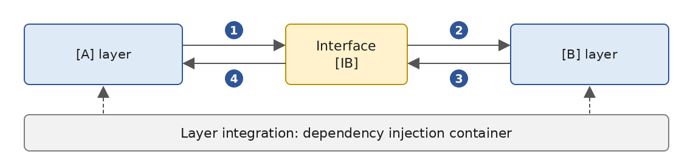
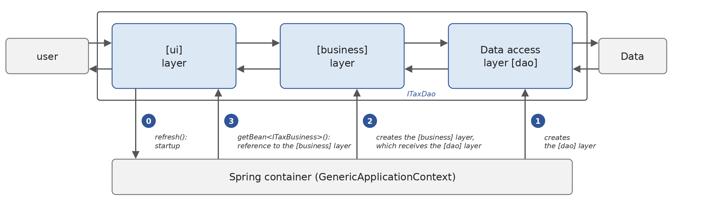

6. Gelaagde architecturen
6.1. Inleiding
Laten we de nieuwste versie van de toepassing voor de belastingberekening (versie 3, hoofdstuk 5) opnieuw bekijken. Teruggebracht tot de essentie had het hoofdprogramma de volgende structuur (vereenvoudigd schema):
Dit programma combineert drie soorten verwerking die in de meeste toepassingen voorkomen:
- het ophalen van gegevens die zijn opgeslagen in bestanden, databases enzovoort: regels 1–9;
- de interactie met de gebruiker: regels 13–14 (invoer) en 17 (uitvoer);
- het gebruik van een bedrijfsalgoritme, de belastingberekening: regel 17. Deze berekening werd voorheen uitgevoerd door de abstracte klasse [AbstractTax], de bovenliggende klasse van [FileTax] en [JsonTax]: in versie 3 zijn het lezen van de gegevens en de berekening nog steeds gecombineerd in één object.
De praktijk heeft uitgewezen dat het onderbrengen van deze verschillende verwerkingen in afzonderlijke klassen de onderhoudbaarheid van de toepassing verbetert. De architectuur van een zo gestructureerde toepassing ziet er als volgt uit:

Deze architectuur heet een „drielagenarchitectuur” (in het Engels „three-tier architecture”). De term „tier” verwijst gewoonlijk naar een deel van de toepassing dat op een andere machine draait. Wanneer de delen op dezelfde machine staan, spreekt men liever van een „gelaagde architectuur”:
- De laag [business] bevat de bedrijfsregels van de toepassing. Voor onze toepassing zijn dat de regels waarmee de belasting van een belastingplichtige wordt berekend. Deze laag heeft gegevens nodig om te functioneren:
- de belastingschijven, die elk jaar veranderen;
- het aantal kinderen, de burgerlijke staat van de belastingplichtige en het jaarinkomen;
- de gegevenstoegangslaag, of [dao] (DAO = Data Access Object), levert gegevens die al in bestanden of databases zijn opgeslagen. Hiertoe behoren de belastingschijven, zoals in versie 3 van de toepassing;
- de gebruikersinterfacelaag, of [ui] (UI = User Interface), levert de gegevens die de gebruiker invoert en toont de resultaten aan de gebruiker. Dit betreft hier het aantal kinderen, de burgerlijke staat en het jaarinkomen van de belastingplichtige.
In het algemeen geldt:
- de laag [dao] verzorgt de toegang tot persistente gegevens (bestanden, databases) of niet-persistente gegevens (netwerk, sensoren enzovoort);
- de laag [ui] verzorgt de interactie met de gebruiker, indien die er is;
- de drie lagen worden door het gebruik van interfaces onafhankelijk van elkaar gemaakt.
We komen terug op de toepassing [Tax], die we al meerdere keren hebben bekeken, om haar een gelaagde architectuur te geven. Eerst moeten we de interfaces van de verschillende lagen van de toepassing definiëren.
6.2. De interfaces van de toepassing [Tax]
Bedenk dat een interface een verzameling functiesignaturen en eigenschappen definieert. De klassen die de interface implementeren, leveren de implementatie.
Laten we terugkeren naar de gelaagde architectuur van onze toepassing:
In dit type architectuur neemt de gebruiker vaak het initiatief. De gebruiker doet een verzoek in [1] en ontvangt een antwoord in [8]. Dit heet de verzoek-antwoordcyclus. Laten we als voorbeeld de berekening van de belasting van een belastingplichtige nemen. Hiervoor zijn meerdere stappen nodig:
- De laag [ui] vraagt de gebruiker om de burgerlijke staat, het aantal kinderen en het jaarsalaris. Dit is de hierboven beschreven bewerking [1];
- Daarna vraagt de laag [ui] aan de laag [business] om de belasting te berekenen. Daartoe stuurt zij de gegevens die zij van de gebruiker heeft ontvangen naar die laag. Dit is bewerking [2];
- De laag [business] heeft bepaalde informatie nodig om haar taak te voltooien: de belastingschijven. Zij vraagt deze informatie op bij de laag [dao] via het pad [3, 4, 5, 6]: [3] is het oorspronkelijke verzoek en [6] is het antwoord op dat verzoek;
- Met alle benodigde gegevens berekent de laag [business] de belasting;
- De laag [business] kan nu antwoord geven op het verzoek dat de laag [ui] in [2] heeft gedaan. Dit is het pad [7];
- de laag [ui] formatteert dit resultaat en presenteert het vervolgens aan de gebruiker. Dit is het pad [8];
- Men kan zich voorstellen dat de gebruiker belastingsimulaties uitvoert en deze wil opslaan. Daarvoor zou hij hetzelfde pad, [1-8], gebruiken.
Zoals uit deze beschrijving blijkt, gebruikt een laag de middelen van de laag rechts van haar, nooit die van de laag links van haar. Neem twee aangrenzende lagen:

De laag [A] doet verzoeken aan de laag [B]. In de eenvoudigste gevallen wordt een laag door één enkele klasse geïmplementeerd. Maar een toepassing evolueert in de loop van de tijd, en de laag [B] kan achtereenvolgens verschillende implementatieklassen hebben: [B1], [B2] enzovoort. Als de laag [B] de laag [dao] is, kan zij een eerste implementatie hebben, [B1], die gegevens uit een bestand haalt. Een paar jaar later wilt u deze gegevens misschien in een database opslaan: in dat geval maakt u een tweede implementatieklasse, [B2]. Als in de oorspronkelijke toepassing de laag [A] rechtstreeks met de klasse [B1] werkte, zouden we de code van de laag [A] gedeeltelijk moeten herschrijven. Stel bijvoorbeeld dat we in de laag [A] iets als het volgende hadden geschreven:
- regel 1: er wordt een instantie van de klasse [B1] gemaakt;
- regel 3: er worden gegevens opgevraagd bij deze instantie.
Als de nieuwe implementatieklasse [B2] functies met dezelfde signatuur heeft als de klasse [B1], moet u alle voorkomens van [B1] wijzigen in [B2]. Dit is het gunstigste scenario, en het is vrij onwaarschijnlijk als u niet op deze signaturen hebt gelet. In de praktijk komt het vaak voor dat de klassen [B1] en [B2] verschillende functiesignaturen hebben, waardoor een aanzienlijk deel van de laag [A] moet worden herschreven.
Dit probleem kan worden verzacht door een interface tussen de lagen [A] en [B] te plaatsen. Zo worden de functiesignaturen die de laag [B] aan de laag [A] aanbiedt, vastgelegd in een interface. Het vorige schema wordt het volgende:

De laag [A] communiceert niet langer rechtstreeks met de laag [B], maar met de interface ervan, [IB]. In de code van de laag [A] komt de implementatieklasse [Bi] van de laag [B] nu nog maar één keer voor, namelijk wanneer het object wordt gemaakt dat de interface [IB] implementeert. Daarna wordt de interface [IB] gebruikt, en niet de implementatieklasse ervan. De vorige code wordt:
- regel 1: een instantie van [ib] die de interface [IB] implementeert, wordt gemaakt door de klasse [B1] te instantiëren. Het type van de variabele is expliciet gedeclareerd: zonder dit zou typeafleiding het type [B1] aan [ib] toekennen;
- regel 3: er worden gegevens opgevraagd bij de instantie [ib].
Als we nu de implementatie [B1] van de laag [B] vervangen door een implementatie [B2], en beide implementaties voldoen aan dezelfde interface [IB], hoeft alleen regel 1 van de laag [A] te worden aangepast. Dit is een groot voordeel dat op zichzelf al het systematisch gebruik van interfaces tussen twee lagen rechtvaardigt.
We kunnen nog verder gaan en de laag [A] volledig onafhankelijk maken van de laag [B]. In de bovenstaande code vormt regel 1 een probleem, omdat de klassenaam [B1] erin is vastgelegd. In het ideale geval zou de laag [A] een implementatie van de interface [IB] moeten ontvangen zonder een klassenaam te hoeven opgeven. Dat zou aansluiten bij het bovenstaande schema: de laag [A] werkt via de interface [IB], en er is geen reden waarom zij de naam van de klasse die die interface implementeert, zou moeten kennen.
Dit is wat dependency injection (DI) mogelijk maakt. De vorige architectuur evolueert als volgt:

Een transversale component, de dependency-injectioncontainer, maakt de objecten die de lagen implementeren en verbindt ze met elkaar: hij geeft de laag [A] een verwijzing naar het object dat de laag [B] implementeert. De code van de laag [A] krijgt dan de volgende vorm:
- regel 2: de laag [A] ontvangt via haar primaire constructor een instantie [ib] die de interface [IB] implementeert. Het sleutelwoord
***[val]***vóór de parameter maakt er een private eigenschap van de klasse van: waar Java een veld, een constructor en een toekenning vereist, volstaat in Kotlin één enkele regel. Het is niet de laag*[A]* die deze instantie maakt, maar de container; - regel 6: er worden gegevens opgevraagd bij de instantie [ib].
De implementatieklasse [B1] komt nergens meer voor in de code van de laag [A]. Wanneer de implementatie [B1] wordt vervangen door een nieuwe implementatie [B2], verandert er niets in de code van de laag [A]: het enige dat verandert, is de ene plek in de toepassing waar aan de container wordt verteld welke klasse [IB] implementeert. Op die plek kan zelfs de naam van de te gebruiken implementatie uit een configuratiebestand worden gelezen.
In de JVM werd dependency injection in het begin van de jaren 2000 gepopulariseerd door het framework Spring, waarvan de configuratie toen in XML-bestanden werd geschreven. Het Spring Framework, nu in versie 7, is nog altijd de standaard in de branche en behandelt Kotlin als een volwaardige taal: het biedt Kotlin-extensies voor zijn API, en Kotlin is een van de twee talen die in de documentatie worden gebruikt. Het vormt de basis van Spring Boot, dat we in hoofdstuk 13, „Webservices”, zullen gebruiken. We gebruiken de container ervan in versie 5 van de toepassing (er zijn andere: CDI, de standaard van Jakarta EE, Google Guice of, specifiek voor Kotlin, Koin en Kodein). De combinatie van „interfaces en dependency injection” verbetert de onderhoudbaarheid van toepassingen aanzienlijk doordat de lagen onafhankelijk van elkaar worden.
Laten we terugkeren naar de gelaagde architectuur van onze toepassing. In eenvoudige gevallen kunnen we beginnen met de laag [business] om de interfaces van de toepassing te ontdekken. Om te functioneren heeft de toepassing gegevens nodig die:
- al beschikbaar zijn in bestanden, databases of via het netwerk. Deze gegevens worden geleverd door de laag [dao];
- nog niet beschikbaar zijn. In dat geval worden ze geleverd door de laag [ui], die ze van de gebruiker verkrijgt.
Welke interface moet de laag [dao] aan de laag [business] aanbieden? De laag [dao] moet de belastingschijven leveren aan de laag [business]. In onze toepassing gebruikt de laag [dao] bestaande gegevens maar maakt zij geen nieuwe gegevens. Haar interface kan er als volgt uitzien:
- regel 1: de interface staat in het pakket [dao]. Zoals we zullen zien, slaan we het bestand [ITaxDao.kt] op in een map [dao];
- regel 9: de interface [ITaxDao] declareert de eigenschap [taxBrackets], die de belastingschijven aan de laag [business] levert. Een Kotlin-interface kan eigenschappen declareren, niet alleen functies: een eigenschap [val] van een interface is abstract; elke implementerende klasse bepaalt hoe zij de waarde ervan verkrijgt. Waar Java alleen-lezen gegevens beschikbaar stelde via een methode [getTaxBrackets()], volgens de JavaBeans-conventie, declareert Kotlin ze als wat ze zijn: een alleen-lezen eigenschap. Vanuit het perspectief van Java is deze eigenschap in feite een methode [getTaxBrackets()];
- de schijven worden teruggegeven als een lijst [List<TaxBracket>] en niet als een array. In Kotlin is [List] een alleen-lezen interface: zij heeft geen [add], [set] of [remove], die behoren tot de interface [MutableList] (hoofdstuk 5). De ontvanger van de lijst kan haar dus niet wijzigen, terwijl de elementen van een array altijd door de ontvanger kunnen worden gewijzigd;
- regel 3: importeert het type [TaxBracket], gedefinieerd in het pakket [entities]:
Een belastingschijf wordt voorgesteld door een data class ([data class], hoofdstuk 4), het Kotlin-equivalent van een Java-record. De compiler genereert de eigenschappen [limit], [coeffR] en [coeffN], evenals de functies [equals], [hashCode], [toString], [copy] en [component1]…[component3] (voor destructuring). We schrijven [TaxBracket(limit, coeffR, coeffN)] om een schijf te maken. De eigenschappen worden gedeclareerd als [val]: een schijf kan na het maken niet meer worden gewijzigd (een data class kan eigenschappen met [var] hebben, maar dat is geen gangbare praktijk). Alle drie de eigenschappen zijn van het type [BigDecimal], de Java-klasse voor exacte decimale getallen, die Kotlin rechtstreeks gebruikt: een [Double] kan 0,068 of 291,09 niet exact voorstellen. Aangezien een *[BigDecimal] zelf onveranderlijk is, is een schijf volledig onveranderlijk. Een klasse met eigenschappen met [var] zou wijziging hebben toegestaan; we zullen zien dat deze onmogelijkheid een neveneffect van een oudere manier van schrijven van de laag [business]* wegneemt.
Welke interface moet de laag [business] aan de laag [ui] presenteren? Laten we de interacties tussen deze twee lagen doornemen:
- De laag [ui] vraagt de gebruiker om de burgerlijke staat, het aantal kinderen en het jaarsalaris. Dit is bewerking [1] in het schema;
- Daarna vraagt de laag [ui] aan de laag [business] om de belasting te berekenen. Daartoe stuurt zij de gegevens die zij van de gebruiker heeft ontvangen naar de laag [business]. Dit is bewerking [2].
De interface van de laag [business] kan er als volgt uitzien:
- regel 1: alles wat met de laag [business] te maken heeft wordt in het pakket [business] geplaatst;
- regel 6: de interface [ITaxBusiness] declareert slechts één functie, die de belasting van een belastingplichtige berekent op basis van zijn burgerlijke staat, aantal kinderen en jaarsalaris. Een interfacefunctie zonder body is abstract en, zoals elk Kotlin-lid zonder zichtbaarheidsmodifier, public: het is niet nodig [public abstract] te schrijven. Het resultaat is [Int]: de belasting in euro, zonder de centen.
We bekijken nu een eerste implementatie van deze gelaagde architectuur.
6.3. Voorbeeldtoepassing, versie 4
6.3.1. Het project
Versie 4 is een programma dat uit meerdere bronbestanden bestaat en geen externe bibliotheken gebruikt. Kotlin kent geen eenvoudig equivalent van de source-code launcher van Java ([java Main.java]), die een programma van meerdere bestanden in het geheugen compileert en uitvoert: een Kotlin-programma van meerdere bestanden wordt gecompileerd voordat het wordt uitgevoerd. We maken daarom een Gradle-project, [TaxV4], dat een van de subprojecten is van de Gradle-build van het hoofdstuk (hoofdstuk 2). De map [06-architectures] bevat alle projecten van het hoofdstuk; het bestand [settings.gradle.kts] somt ze op:
- regels 3–6: de plug-in waarmee Gradle JDK 25 zelf kan downloaden als hij die niet op de machine vindt (hoofdstuk 2);
- regel 8: de naam van het rootproject;
- regel 11: de vijf subprojecten van dit hoofdstuk. Een subproject wordt aangeduid met zijn pad, waarvan de elementen door dubbele punten worden gescheiden: [TaxV5:tax-dao] is het subproject van de map [TaxV5/tax-dao]. We komen later terug op [DemoTests] en de drie subprojecten van versie 5.
Het bestand [build.gradle.kts] van het rootproject declareert de plug-ins die de subprojecten gebruiken, samen met hun versies, zonder ze toe te passen:
- regel 4: de Kotlin-plug-in voor de JVM, versie 2.4.20. Door [apply false] is hij beschikbaar voor de subprojecten, die hem zullen toepassen zonder de versie te herhalen;
- regel 5: een Kotlin-compilerplug-in die versie 5 nodig heeft voor Spring. Dit lichten we toe wanneer het zover is.
Het subproject [TaxV4] heeft de volgende mapstructuur. Elke laag heeft een eigen map:
- De map [entities] bevat typen die de lagen [ui], [business], en [dao] gemeen hebben: de data class [TaxBracket], de uitzondering [TaxException], en de enumeratie [ErrorCode] met de foutcodes ervan;
- de map [dao] bevat de interface en klassen van de laag [dao]. We gebruiken twee implementaties van de interface [ITaxDao]: de klasse [HardwiredTax], waarvan de gegevens in de code zijn vastgelegd (versie 2), en de klasse [FileTax], die gegevens uit een tekstbestand leest (versie 3). Het lezen van een JSON-bestand, de andere optie in versie 3, komt aan bod in versie 5;
- de map [business] bevat de interface en de klasse van de laag [business];
- de map [ui] bevat de klasse van de laag [ui];
- het bestand [Main.kt] maakt de lagen en koppelt ze aan elkaar;
- het bestand [TaxData.txt] bevat de belastingschijven die de implementatie [FileTax] van de laag [dao] leest. Het staat in de hoofdmap van het subproject, de huidige map van het programma dat door Gradle wordt gestart.
In Java doen mapnamen ertoe: een klasse in het pakket [dao] moet in een map met de naam [dao] staan. Kotlin is flexibeler: het pakket is het pakket dat door de instructie [package] in het bestand is gedeclareerd, ongeacht de map waarin het staat. De conventie, die door IntelliJ, IDEA en deze cursus wordt gevolgd, blijft echter om bestanden te ordenen in mappen die de pakketten weerspiegelen: een bestand uit het pakket [tax.dao] in een map [tax/dao] (in een project waarin alle pakketten met dezelfde root beginnen, worden de mappen voor die gemeenschappelijke root eenvoudigweg weggelaten). De door de compiler geproduceerde [.class]-bestanden zijn daarentegen altijd per pakket geordend: zo vindt de virtuele machine de klassen op basis van hun volledige namen.
Het bestand [Main.kt] heeft geen instructie [package]: het hoort bij het rootpakket, dat geen naam heeft. De functie [main] wordt gecompileerd tot de klasse [MainKt], de naam die het buildbestand van het subproject toekent aan de plug-in [application]:
- regels 2–4: het subproject past de Kotlin-plug-in toe, zonder versie (die door het rootproject wordt geleverd), en de plug-in [application], die de taak [run] toevoegt;
- regels 7–8: de projectgegevens;
- regels 14–21: de compilerconfiguratie, dezelfde als in de vorige hoofdstukken;
- regels 25–27: de hoofdklasse, [MainKt], zonder pakketnaam. Dit subproject bevat maar één programma: de eigenschap [main] uit de vorige hoofdstukken is overbodig;
- regels 30–32: het programma leest van het toetsenbord;
- regels 35–38: de programma’s die door Gradle worden gestart, schrijven hun uitvoer in
UTF-8, zodat tekens met accenten correct worden weergegeven in Windows (hoofdstuk 2).
In tegenstelling tot Java staat Kotlin toe een declaratie van het rootpakket vanuit een ander pakket te importeren door haar zonder voorvoegsel te noemen ([import declarationName]). De conventie blijft echter om daar alleen het hoofdprogramma te plaatsen, dat door niemand wordt geïmporteerd.
Voer het programma uit vanuit de map van het hoofdstuk met [gradlew -q :TaxV4:run]: het pad [:TaxV4] verwijst naar het subproject, en de taak [run] wordt uitgevoerd met de map van het subproject als huidige map. IntelliJ IDEA opent de map [06-architectures] als een Gradle-project en voert [Main.kt] uit door te klikken op de groene driehoek naast de functie [main] ervan.
6.3.2. Entiteiten van de toepassing

Met entiteiten bedoelen we typen die meerdere lagen beslaan. Dit zijn doorgaans de klassen die de gegevens van de laag [dao] inkapselen. Deze entiteiten reiken gewoonlijk tot aan de laag [ui]. De entiteiten van de toepassing zijn de data class [TaxBracket], die al is gepresenteerd, en de uitzondering [TaxException], samen met de enumeratie van haar foutcodes:
- regel 4: een enumeratie ([enum class]). Net als in Java zijn de waarden van een enumeratie objecten, unieke instanties van de klasse [ErrorCode], en een enumeratie kan eigenschappen en methoden hebben;
- regel 5: de vijf foutcodes. De puntkomma die de lijst afsluit, is verplicht wanneer er andere leden op volgen. De eigenschap [ordinal], geërfd van de klasse [Enum], geeft de positie van de waarde in de lijst terug: 0 voor [ACCESS], 4 voor [FIELD3];
- regels 8–9: aan elke code is een bit gekoppeld. [bit] is een berekende eigenschap: zij heeft geen veld; haar accessor, [get()], berekent haar telkens wanneer zij wordt gelezen. Kotlin heeft geen shift-operatoren: [1 shl ordinal] („shift left”) is het equivalent van [1 << ordinal] in Java en is gelijk aan 1, 2, 4, 8 en 16. Deze machten van 2 kunnen worden gecombineerd met de infixfunctie [or] ([|] in Java): de code [FIELD2.bit or FIELD3.bit] (8 + 16 = 24) betekent dat de velden 2 en 3 van een regel onjuist zijn. De foutcode van de uitzondering blijft een eenvoudig geheel getal, dat alle implementaties van de laag [dao] kunnen gebruiken;
- regels 11–14: de functie [names] zet de namen van de codes die in een bitreeks zijn opgenomen om in tekst, „FIELD2, FIELD3” voor 24. Zij gebruikt geen specifieke waarde van de enum: zij staat in het companion object en wordt aangeroepen als een statische Java-methode, [ErrorCode.names(24)]. De eigenschap [entries] (Kotlin 1.9) is de lijst met waarden van de enum; zij vervangt de functie [values()], die bij elke aanroep een nieuwe array maakt. [(code and it.bit) != 0] is waar als het bit dat overeenkomt met de waarde van [it] aanwezig is in [code] ([and] is het equivalent van [&] in Java). De waarden die [filter] ophaalt, worden vervolgens samengevoegd door [joinToString], met het scheidingsteken [", "] en een lambda die de naam ([name]) van elke waarde teruggeeft. De body van de functie is een expressie: de functie heeft geen accolades en het resultaat ervan volgt op het teken [=].
- regel 5: een toepassingsspecifieke uitzondering is afgeleid van de klasse [RuntimeException]. In Kotlin speelt de keuze tussen checked en unchecked exceptions niet: de taal kent geen checked exceptions (hoofdstuk 3), geen enkele functie declareert de uitzonderingen die zij genereert en geen enkele aanroeper hoeft ze op te vangen. Afleiden van
*[RuntimeException]* in plaats van van*[Exception]*blijft de gangbare praktijk, omdat zo wordt gewaarborgd dat een uitzondering vanuit Java-code consistent wordt gezien; - regels 6–10: de primaire constructor heeft drie parameters. [message] en [cause] zijn eenvoudige parameters die worden doorgegeven aan de constructor van de bovenliggende klasse (regel 11); [code], gedeclareerd als [val], is ook een alleen-lezen eigenschap van de uitzondering. De oorzaak, de oorspronkelijke uitzondering als die er is, is beschikbaar via de eigenschap [cause], geërfd van [Throwable];
- regels 8–10: dankzij de standaardwaarden van parameters vervangt deze ene constructor de twee constructors van de Java-versie, een met een bericht en een code, de andere ook met de oorzaak. Met benoemde argumenten schrijven we [TaxException(message, code = 2)] als er geen oorzaak is, en [TaxException(message, e, 1)] als die er wel is;
- regel 10: de komma na de laatste parameter („trailing comma”) is toegestaan; zij maakt het gemakkelijker een parameter toe te voegen;
- Een uitzondering is serialiseerbaar (de klasse [Throwable] implementeert de interface [Serializable]). De Java-versie declareerde een veld [serialVersionUID] om een waarschuwing van [javac -Xlint:all] te voorkomen; de Kotlin-compiler geeft deze waarschuwing niet, dus declareren we dit veld niet.
In deze versie genereert alleen de klasse [FileTax] in de laag [dao] een [TaxException].
6.3.3. De laag [dao]
Laten we de interface van de laag [dao] nog eens bekijken:
We implementeren deze interface op twee verschillende manieren. Eerst met de klasse [HardwiredTax]:
- regel 6: de klasse [HardwiredTax] implementeert de interface [ITaxDao]. In Kotlin wordt de dubbele punt gebruikt voor zowel klassenovererving als interface-implementatie: er is geen sleutelwoord [implements]. Let op dat de interface zonder haakjes wordt genoemd, terwijl een bovenliggende klasse wordt genoemd met de constructorargumenten ([RuntimeException(message, cause)]): een interface heeft geen constructor;
- regels 9–16: de implementatie van de eigenschap van de interface. Het sleutelwoord [override] is verplicht: de compiler controleert of de eigenschap inderdaad een lid van de interface implementeert, vergelijkbaar met de optionele annotatie [@Override] van Java. De eigenschap wordt bij de declaratie geïnitialiseerd door [listOf], dat een alleen-lezen lijst maakt. Ook hier is een komma na het laatste element toegestaan;
- regels 20–22: een private functie die een schijf maakt uit drie strings. Zij is op bestandsniveau gedeclareerd, buiten de klasse: [private] maakt haar alleen zichtbaar binnen het bestand [HardwiredTax.kt]. De extensiefunctie [toBigDecimal] uit de standaardbibliotheek zet een string om in [BigDecimal]; dit is de constructor [BigDecimal(String)]. Een [BigDecimal] die uit een string is gemaakt, is exact: ["0.068".toBigDecimal()] is precies 0,068, terwijl een [BigDecimal] die uit een [Double] is gemaakt, de onnauwkeurigheid ervan erft: [0.068.toBigDecimal()], dat wordt afgeleid door [Double] om te zetten in een string, levert inderdaad 0,068 op, maar [(0.1 + 0.2).toBigDecimal()] levert 0,30000000000000004 op. Het type van het resultaat van de functie, [TaxBracket], wordt afgeleid uit de expressie na het teken [=].
De interface [ITaxDao] wordt ook geïmplementeerd door de klasse [FileTax], die belastingschijven uit een tekstbestand leest. Het bestand [TaxData.txt] ziet er als volgt uit:
Elke regel beschrijft een belastingschijf in het formaat [limit:coeffR:coeffN]. Getallen worden geschreven met een decimaalpunt, ongeacht de taal van het systeem; zo is het bestand op alle machines leesbaar. De waarden zijn die van het belastingschema van 2004 voor de inkomsten van 2003 en zijn ongewijzigd overgenomen: dit is een oefening. De klasse [FileTax] ziet er als volgt uit:
- regels 3–7: Kotlin kent geen statische imports ([import static] van Java): de gewone instructie [import] importeert zowel klassen als enum-waarden en functies. We schrijven dan [FIELD1] in plaats van [ErrorCode.FIELD1];
- regels 13–15: de functies in het pakket [kotlin.io.path] (hoofdstuk 5), die de functies van de Java-API en NIO aanvullen;
- regel 19: de primaire constructor krijgt de naam van het bestand met belastingschijven mee. Deze parameter, gedeclareerd als [val], is ook een publieke alleen-lezen eigenschap, [fileName]: zij vervangt het veld en de methode [getFileName] van de Java-versie;
- regel 22: de eigenschap van de interface. Zij wordt niet bij de declaratie geïnitialiseerd: de compiler controleert of er in het volgende blok [init] een waarde aan wordt toegekend, en wel slechts één keer;
- regels 24–39: het blok [init] wordt uitgevoerd wanneer het object wordt gemaakt. Het leest het bestand en haalt er vervolgens de schijven uit;
- regels 26–34: in Kotlin is
[try]een expressie: de waarde ervan is die van de laatste expressie in het blok[try]***, in dit geval de lijst met regels van het bestand, of die van het blok[catch]. Het blok [catch] genereert een uitzondering: het type ervan is [Nothing], het type van expressies die nooit een waarde teruggeven, en de variabele [lines] heeft het type [List<String>]*; - regel 27: de functie [Path] in [kotlin.io.path] maakt het bestandspad; zij is het equivalent van [Path.of]. Een relatief pad is relatief ten opzichte van de huidige map;
- regels 28–29: als het bestand niet bestaat, wordt een [NoSuchFileException] (pakket [java.nio.file]) met een expliciete melding gegenereerd. De constructor met drie parameters krijgt de bestandsnaam, de naam van een eventueel tweede bestand (hier [null]) en de reden van de fout mee. Zonder deze controle zou de leesbewerking zelf een [NoSuchFileException] genereren, waarvan de melding alleen uit de bestandsnaam zou bestaan;
- regel 31: de extensiefunctie [readLines] leest het hele bestand in UTF-8 en geeft een lijst met de regels ervan terug. Zij opent en sluit het bestand zelf. Voor een groot bestand verdient het de voorkeur het bestand stroomsgewijs te lezen met [useLines];
- regels 32–34: alle invoer-/uitvoerfouten zijn afgeleid van [IOException]: ontbrekend bestand ([NoSuchFileException]), onvoldoende rechten ([AccessDeniedException]), bestand niet in UTF-8-formaat ([MalformedInputException]) enzovoort. De fout wordt ingekapseld in een [TaxException] met de code [ACCESS]; de oorspronkelijke uitzondering blijft als oorzaak bewaard (tweede argument);
- regels 37–39: het lezen van de regels en het analyseren ervan zijn afzonderlijke bewerkingen, wat in Java niet het geval was. [withIndex] koppelt elke regel aan haar index (te beginnen bij 0) in een object [IndexedValue] met de eigenschappen [index] en [value]; [filter] verwijdert lege regels of regels die uit spaties bestaan ([isNotBlank]) zonder de indices van de andere regels te verliezen; [map] zet elk van de overgebleven regels om in een schijf. De lambdafunctie van [map] pakt haar parameter [IndexedValue] uit in de twee componenten ervan, [(index, line)]. Het regelnummer, [index + 1], en de regel zonder voorafgaande en volgende spaties ([trim]) worden doorgegeven aan de functie [bracket]. Het resultaat van [map] is een alleen-lezen [List];
- regel 43: de functie die de schijf teruggeeft die door een regel wordt beschreven, of een [TaxException] genereert als de regel ongeldig is. Deze uitzondering is geen [IOException]: zij wordt ongewijzigd teruggegeven aan de aanroeper;
- regel 45: de regel wordt door [split] gesplitst met de reguliere expressie [SEPARATOR]: het scheidingsteken is een dubbele punt, die door spaties omgeven kan zijn. Let op: in Kotlin splitst
***[split(":")]** met een string de string zelf, zonder haar als reguliere expressie te interpreteren; hiervoor moet u een object*[Regex]doorgeven; - regels 46–47: een regel zonder drie velden is ongeldig. De foutcode wordt doorgegeven via een benoemd argument, [code = LINE.bit]: er is geen oorzaak, en de parameter [cause] behoudt haar standaardwaarde, [null];
- regel 50: omzetting van de drie velden. [fields.map(::number)] past de functie [number] toe op elk veld ([::number] is een functiereferentie; zie hoofdstuk 7) en geeft een lijst van drie [BigDecimal?]-waarden terug, die de destructuring-toekenning over drie variabelen verdeelt;
- regels 51–57: als een veld onjuist is, voegt elk onjuist veld zijn bit toe aan de foutcode met de infixfunctie [or], en wordt een [TaxException] gegenereerd. De melding bevat het regelnummer en de inhoud van de regel;
- regel 60: op dit punt weet de compiler dat [limit], [coeffR] en [coeffN] niet [null] zijn; anders zou de voorgaande [if] een uitzondering hebben gegenereerd. Dankzij smart casting worden deze variabelen van het type [BigDecimal?] behandeld als [BigDecimal], het type dat de constructor van [TaxBracket] verwacht: noch [!!] noch enige omzetting is nodig;
- regels 65–66: de twee reguliere expressies worden eenmalig gemaakt in het companion object, en niet bij elke aanroep. Zij zijn geschreven als ruwe strings (["""..."""]), waarin de backslash niet hoeft te worden verdubbeld: [\s*] komt overeen met nul of meer spaties;
- regels 69–70: omzetting van een veld in [BigDecimal]. [NUMBER.matches(field)] controleert of de hele string overeenkomt met de reguliere expressie [\d+(\.\d+)?]: een of meer cijfers, eventueel gevolgd door een punt en meer cijfers. „0,191” wordt dus geweigerd, evenals elk negatief getal. De functie [toBigDecimal] is niet afhankelijk van de taal van de gebruiker: zij verwacht altijd een decimaalpunt. Bij een fout geeft de functie [null] terug, vandaar het type [BigDecimal?]. We hadden [toBigDecimalOrNull] kunnen gebruiken, die [null] teruggeeft voor een ongeldige string, maar die ook „-1” of „1e3” accepteert.
6.3.4. De laag [business]
Laten we de interface van deze laag nog eens bekijken:
De implementatie ervan, [TaxBusiness], ziet er als volgt uit:
- regel 8: de klasse [TaxBusiness] implementeert de interface [ITaxBusiness]. De laag [business] moet samenwerken met de laag [dao]: zij ontvangt daarom via haar primaire constructor een [dao]-verwijzing naar het object dat de interface [ITaxDao] implementeert. Deze parameter is niet gedeclareerd als [val]: hij wordt alleen gebruikt tijdens het maken van het object en wordt geen eigenschap;
- regel 11: bij het maken van het object vraagt de laag [business] de belastingschijven eenmalig op bij de laag [dao] en slaat zij ze op in een private alleen-lezen eigenschap. Het type ervan, [List<TaxBracket>], wordt afgeleid. Merk op dat de laag [business] de laag [dao] alleen kent via haar interface [ITaxDao]: zij weet niet of de belastingschijven uit de code, uit een bestand of, later, uit een database komen;
- regel 14: de implementatie van de functie van de interface, met het vereiste sleutelwoord [override];
- regels 16–17: de laag [business] vertrouwt haar aanroepers niet. De functie [require] uit de standaardbibliotheek (hoofdstuk 3) genereert een [IllegalArgumentException] als de voorwaarde onwaar is; de melding van de uitzondering wordt berekend door de lambda, die alleen bij een fout wordt uitgevoerd. De melding geeft de onjuiste parameter aan;
- regels 19–21: het aantal delen. [nbChildren.toBigDecimal()] zet het gehele getal om in [BigDecimal]. Een Java-klasse als [BigDecimal] heeft geen rekenkundige operatoren, maar de standaardbibliotheek van Kotlin voegt ze toe via extensiefuncties die zijn gemarkeerd met [operator] (hoofdstuk 4): [a + b], [a - b], en [a * b] roepen [add], [subtract] en [multiply] aan, en [shares += HALF] wordt in Java geschreven als [shares = shares.add(HALF)]. Aangezien een [BigDecimal] onveranderlijk is, geeft elke bewerking een nieuw object terug: daarom is [shares] een variabele ([var]). Het aantal kinderen wordt met 0,5 vermenigvuldigd in plaats van door 2 gedeeld, om de hieronder genoemde reden: 3 kinderen zijn gelijk aan 1,5 deel;
- regels 24–25: het belastbaar inkomen en het gezinsquotiënt. Een deling door het aantal delen kan een oneindig aantal decimalen opleveren (bijvoorbeeld een deling door 3): zonder opgegeven limiet zou de methode [divide] dan een [ArithmeticException] genereren. [MathContext.DECIMAL128] beperkt het resultaat tot 34 significante cijfers;
- regel 28: we zoeken de eerste inkomensschijf waarvan de drempel groter dan of gelijk aan het gezinsquotiënt is, onder alle schijven behalve de laatste ([dropLast(1)]). [firstOrNull] geeft het eerste element terug dat aan de voorwaarde voldoet, of [null] als er geen is; de Elvis-operator [?:] vervangt [null] dan door de laatste schijf, [brackets.last()], waarvan de grens (0) niet wordt gebruikt. De klasse [BigDecimal] implementeert de interface [Comparable]: Kotlin vertaalt [qf <= it.limit] naar [qf.compareTo(it.limit) <= 0]. Deze regel vervangt de lus [for] en de instructie [break] uit de Java-versie;
- regel 30: de belasting. De functie [toInt()] van een [BigDecimal] (de Java-methode [intValue()]) geeft het gehele deel van het resultaat terug;
- regels 33–36: twee constanten, opgeslagen in een private companion object. Zij kunnen niet worden gedeclareerd als [const]: dat kan alleen voor primitieve typen en strings.
Een opmerking over de operator [/]. De standaardbibliotheek definieert ook de operator [/] voor [BigDecimal], maar die roept [divide(other, RoundingMode.HALF_EVEN)] aan: het resultaat heeft hetzelfde aantal decimalen als het deeltal. [3.toBigDecimal() / BigDecimal.TWO] levert dus 2 op, niet 1,5, terwijl [3.toBigDecimal().divide(BigDecimal.TWO)] wel 1,5 oplevert. Daarom vermijdt de bovenstaande code deze operator: zij vermenigvuldigt met 0,5 en roept [divide] expliciet aan met een [MathContext]. Bij de functies van [BigDecimal] is het altijd het best precies te weten wat een deling doet.
Vroeger paste men vaak, vóór het zoeken, de grens van de laatste schijf aan (iets als [brackets[brackets.size - 1].limit = qf + 1]) zodat de zoeklus altijd zou stoppen. Deze instructie wijzigde de array die de laag [dao] aanleverde: een neveneffect op gegevens die door alle lagen worden gedeeld. Dat kunnen we hier niet meer schrijven: de eigenschap [limit] van een [TaxBracket] is alleen-lezen, en de lijst met de schijven is dat ook. Moderne code neemt eenvoudigweg de laatste schijf wanneer geen enkele grens geschikt is, zonder de ontvangen gegevens te wijzigen.
6.3.5. De laag [ui]
In de versies 2 en 3 was de gebruikersinterface geschreven in het hoofdprogramma, na het maken van het rekenobject. Het enige verschil was de manier waarop dit object werd gemaakt. Nu isoleren we deze gebruikersinterface in de laag [ui], die de laag [business] alleen kent via haar interface:
- regel 6: de dialoog heeft geen eigen toestand. In Java maakten we een klasse met de naam [final] met een private constructor, die alleen statische leden bevatte. Kotlin gebruikt hiervoor de objectdeclaratie ([object], hoofdstuk 4): [Dialog] is zowel een klasse als de enige instantie ervan, die bij het eerste gebruik wordt gemaakt. De functies ervan worden aangeroepen als statische methoden: [Dialog.run(business)];
- regels 9–10: de vraag die aan de gebruiker wordt gesteld, een private constante ([const val]);
- regels 13–18: de helptekst is een ruwe string, begrensd door drie aanhalingstekens. Zij kan meerdere regels beslaan; [trimIndent] (hoofdstuk 5) verwijdert de gemeenschappelijke inspringing van de regels, evenals de eerste en de laatste regel als die leeg zijn: de tekst begint en eindigt niet met een regeleinde. Het resultaat van [trimIndent] wordt tijdens de uitvoering berekend: de string kan niet worden gedeclareerd als [const];
- regel 24: de functie [run] ontvangt de laag [business] in de vorm van haar interface [ITaxBusiness]. Zij weet niets van de klasse die haar implementeert of van de laag [dao];
- regels 27–28: de vraag wordt getoond door [print], zonder regeleinde, en vervolgens leest [readlnOrNull] een regel van het toetsenbord. Dit geeft [null] terug aan het einde van de invoerstroom; de veilige aanroep [?.trim()] geeft dan ook [null] terug, wat de Elvis-operator vervangt door de lege string: het einde van de stroom beëindigt de dialoog net als een lege regel;
- regel 34: de ingevoerde regel wordt gesplitst op spaties; de reguliere expressie [\s+] (een of meer spaties) negeert meervoudige spaties;
- regels 40–41: in Kotlin vergelijkt de operator [] (en [!=]) de inhoud van strings: hij roept [equals]* aan. Het is de operator *[=] die verwijzingen vergelijkt. De valkuil van Java, waar [==] verwijzingen vergelijkt, bestaat niet;
- regels 46–54: het aantal kinderen en het salaris moeten positieve gehele getallen of nul zijn. [toIntOrNull] geeft [null] terug als het veld geen geheel getal is, en de Elvis-operator vervangt [null] dan door -1. Een negatief getal en een ongeldige invoer worden zo door dezelfde controle geweigerd. De methode [integer] in de Java-versie, met haar varianten van [try]/[catch] voor [NumberFormatException], is overbodig geworden;
- regel 58: de parameters zijn correct: de berekening wordt opgevraagd bij de laag [business]. De aanroep wordt rechtstreeks in de stringtemplate geschreven, tussen [${...}].
6.3.6. De lagen integreren
Er hoeven alleen nog de lagen te worden gemaakt en aan elkaar gekoppeld. Dat is de taak van het hoofdprogramma [Main.kt]:
- regel 1–9: het bestand bevat geen [package]-directive; de imports verwijzen naar de klassen uit de andere vier pakketten;
- regel 14: de functie [main] ontvangt de opdrachtregelargumenten in de array [args]. Het argument bepaalt de implementatie van de laag [dao]: [hardwired] voor de klasse [HardwiredTax], anders de naam van het bestand dat de klasse [FileTax]leest, met [TaxData.txt] als standaardwaarde;
- regel 15: [firstOrNull] geeft het eerste argument terug, of [null] als er geen is; de Elvis-operator vervangt dat door de standaardbestandsnaam;
- regel 16: de variabele [business] wordt geïnitialiseerd met een expressie [try]. Het type is expliciet opgegeven: het is de interface [ITaxBusiness], niet de klasse [TaxBusiness] die door type-inferentie zou ontstaan;
- Regel 18: het maken van de laag [dao]. [if] is een expressie: de waarde ervan is de ene of de andere van de twee implementaties. Dit is de enige plaats in het programma waar de klassen [HardwiredTax] en [FileTax] bij naam worden genoemd;
- regel 20: het maken van de laag [business], die de laag [dao] ontvangt. Dit is de laatste expressie in het blok [try] en dus de waarde ervan;
- Regel 21–26: het maken van de laag [dao] kan een [TaxException] veroorzaken. Er wordt dan een foutmelding weergegeven, samen met het bericht van de oorspronkelijke exception (indien aanwezig), en het programma eindigt met exitcode 1. De foutcode wordt in leesbare tekst weergegeven met de functie [ErrorCode.names]. Als [e.cause] niet [null] is, [let] maakt de beschrijving van de oorspronkelijke exception; anders levert de Elvis-operator een lege tekenreeks op;
- regel 26: de functie [exitProcess] uit de standaardbibliotheek roept [System.exit] aan. Het retourtype is [Nothing]: de compiler weet dat de functie nooit terugkeert en dat het blok [catch] dus geen waarde oplevert. De expressie [try] heeft dus het type [ITaxBusiness]. In de Java-versie moest een instructie [return], die nooit wordt uitgevoerd, na [System.exit(1)] worden toegevoegd, zodat de compiler zou inzien dat de variabele [business] was geïnitialiseerd;
- Regel 30: de lagen zijn gereed: de laag [ui] communiceert met de gebruiker.
6.3.7. Uitvoeringen
Vanuit de map van het hoofdstuk, met het bestand [TaxData.txt] (implementatie [FileTax]), en met een test van de validatie van de invoer van de gebruiker (in de resultaten van dit hoofdstuk is de invoer van de gebruiker via invoeromleiding aan het programma doorgegeven en na de vragen geplaatst, waar de gebruiker haar intypt):
Met de implementatie [HardwiredTax]. De programmaargumenten worden doorgegeven via de optie [--args] van de taak [run]:
Met een bestand dat niet bestaat:
De foutcode is [ACCESS] en het bericht van de oorspronkelijke exception, [NoSuchFileException], wordt weergegeven: het bestaat uit de bestandsnaam, gevolgd door de reden die aan de constructor is meegegeven. Het programma eindigt met exitcode 1: Gradle meldt vervolgens het mislukken van de taak [run] met enkele extra regels, die we hier niet weergeven.
Met het volgende bestand, [TaxDataInvalid.txt], waarin regel 3 met decimale komma's is geschreven:
krijgen we:
Veld 2 en 3 van regel 3 zijn onjuist: de foutcode combineert de bits van [FIELD2] en [FIELD3], en de functie [ErrorCode.names] geeft de code weer als „FIELD2, FIELD3.”
6.3.8. Conclusie
De gelaagde architectuur en het gebruik van interfaces hebben onze applicatie een zekere flexibiliteit gegeven. Dat blijkt uit de manier waarop het hoofdprogramma de lagen [dao] en [business] maakt:
Het wijzigen van de implementatie van de laag [dao] raakt alleen regel 2. Zodra de lagen zijn gemaakt, is de code van de laag [ui] in beide gevallen gelijk: de laag [business] wordt daar gebruikt via de interface [ITaxBusiness], niet via de implementatieklasse.
Dezelfde flexibiliteit is zichtbaar in de laag [business]: die wordt opgebouwd op basis van een verwijzing naar de interface van de laag [dao]. Het wijzigen van de implementatie van die laatste heeft dus geen invloed op de laag [business]. Daarom kon onze ene klasse [TaxBusiness] zonder wijziging werken met twee verschillende implementaties van de laag [dao].
6.4. Voorbeeldapplicatie - versie 5

Deze nieuwe versie is gebaseerd op de vorige, met de volgende wijzigingen:
- De lagen [dao] en [business] worden elk in een Gradle-subproject geplaatst dat een bibliotheek (een JAR-bestand) oplevert, en worden getest met het unittestframework JUnit;
- De laag [dao] krijgt een derde implementatie, [JsonTax], die de belastingschijven uit een JSON-bestand leest met de bibliotheek Jackson;
- De integratie van de lagen wordt verzorgd door de dependency-injectioncontainer van Spring, en de implementatie van de laag [dao] wordt gekozen in een configuratiebestand.
In grote projecten werken meerdere ontwikkelaars aan dezelfde applicatie. Gelaagde architecturen vergemakkelijken deze manier van werken: omdat de lagen met elkaar communiceren via goed gedefinieerde interfaces, hoeft een ontwikkelaar die aan één laag werkt zich niet bezig te houden met het werk van andere ontwikkelaars aan andere lagen. Het is alleen nodig dat iedereen zich aan de interfaces houdt.
Om bijvoorbeeld de laag [business] te testen, heeft de ontwikkelaar een implementatie van de laag [dao] nodig. Zolang die implementatie niet gereed is, kan de ontwikkelaar een dummy-implementatie van de laag [dao] gebruiken, mits die zich aan de interface [ITaxDao] houdt. Dit is een ander voordeel van de gelaagde architectuur: een vertraging in de laag [dao] verhindert niet dat de laag [business] kan worden getest. De mock-implementatie heeft bovendien het voordeel dat ze veel eenvoudiger op te zetten is dan de echte laag [dao], die mogelijk een DBMS, netwerkverbindingen enzovoort vereist.
Zodra de laag [dao] gereed en getest is, wordt ze aan de ontwikkelaars van de laag [business] aangeleverd in de vorm van een bibliotheek (een JAR-bestand) in plaats van als broncode die moet worden gekopieerd. Uiteindelijk wordt de applicatie opgeleverd als een hoofdprogramma (dat van de laag [ui]) en klassenbibliotheken (de andere lagen).
6.4.1. De Gradle-subprojecten voor versie 5
Versie 5 bestaat uit drie subprojecten van de Gradle-build van het hoofdstuk, één per laag, in de map [TaxV5]. De tests vormen geen apart project: de Gradle-conventie (dezelfde als die van Maven) plaatst de tests van een subproject in de map [src/test/kotlin] ervan. Ze worden door Gradle gecompileerd en uitgevoerd, maar maken geen deel uit van het JAR-bestand van het subproject. Dit levert de volgende mappenstructuur op:
De pakketten krijgen nu het voorvoegsel [tax]: [tax.entities], [tax.dao], [tax.business], [tax.ui]. De subprojecten [tax-dao] en [tax-business] worden namelijk later door andere projecten hergebruikt (hoofdstuk 10 tot en met 13), en twee bibliotheken die door hetzelfde programma worden gebruikt, mogen niet twee klassen met dezelfde volledig gekwalificeerde naam definiëren. In professionele projecten krijgen pakketten als voorvoegsel de omgekeerde domeinnaam van de organisatie ([org.springframework], [tools.jackson]…), wat unieke namen waarborgt.
De map [TaxV5] zelf heeft geen buildbestand: het is een eenvoudige groeperingsmap, die Gradle behandelt als een leeg project, [:TaxV5], de ouder van de drie subprojecten [:TaxV5:tax-dao], [:TaxV5:tax-business] en [:TaxV5:tax-ui], die in het bestand [settings.gradle.kts] van dit hoofdstuk zijn gedeclareerd. Waar Maven een ouderproject nodig heeft om modules te groeperen, heeft Gradle alleen dit bestand nodig. Elk subproject heeft een eigen bestand [build.gradle.kts], dat we samen met de bijbehorende laag behandelen. In deze bestanden komen enkele regels terug (de repository Maven Central, de compilerconfiguratie en de testinstellingen); in een groter project zouden we deze regels onderbrengen in een conventieplug-in (map [buildSrc]) en de bibliotheekversies samenvoegen in een versiecatalogus ([gradle/libs.versions.toml]).
De applicatie wordt gebouwd en getest met de volgende opdracht, ingevoerd in de map van het hoofdstuk:
Gradle compileert elk subproject, compileert en voert de tests ervan uit en maakt vervolgens het JAR-bestand aan in de map [build/libs] van het subproject, bijvoorbeeld [TaxV5/tax-dao/build/libs/tax-dao-5.0.jar]. De subprojecten worden verwerkt in de volgorde die hun afhankelijkheden voorschrijven: [tax-dao], dan [tax-business], en daarna [tax-ui]. Als een test mislukt, stopt de build. De opdracht [gradlew :TaxV5:tax-business:build] bouwt alleen het subproject [tax-business]… en de subprojecten waarvan het afhankelijk is: Gradle weet dat [tax-business] [tax-dao] nodig heeft en compileert die laatste eerst als ze is gewijzigd (zonder de tests ervan uit te voeren). Anders dan bij Maven is er geen lokale repository die met een opdracht [install] up-to-date moet worden gehouden: binnen één build zijn de subprojecten rechtstreeks voor elkaar zichtbaar.
De applicaties in hoofdstuk 10 tot en met 13 hergebruiken de lagen van versie 5 zonder de broncode te kopiëren. Hun bestand [settings.gradle.kts] neemt de build van hoofdstuk 6 op als composite build:
en in hun bestanden [build.gradle.kts] declareren ze afhankelijkheden van [examples.tax:tax-business:5.0] en, voor het object [Dialog], van [examples.tax:tax-ui:5.0], net zoals ze dat voor Jackson of Spring zouden doen:
Gradle herkent de subprojecten met deze coördinaten (groep [examples.tax], naam van het subproject, versie [5.0]) in de opgenomen build en gebruikt ze in plaats van een gedownloade bibliotheek: Gradle bouwt ze indien nodig, en een wijziging in versie 5 is direct zichtbaar in de volgende versies. Daarom declareren de drie subprojecten de groep [group = "examples.tax"] en de versie [version = "5.0"].
6.4.2. De laag [dao]
Het subproject [tax-dao] bevat de laag [dao] en de entiteiten van de applicatie. Het bestand [build.gradle.kts] ervan ziet er als volgt uit:
- Regel 2–5: het subproject past de Kotlin-plug-in toe en de plug-in [java-library], de plug-in voor bibliotheken. Die laatste, die door Gradle wordt geleverd, wordt tussen backticks geschreven omdat de naam een koppelteken bevat. Ze voegt de afhankelijkheidsconfiguratie [api] toe, die het subproject [tax-business] gebruikt;
- regel 9–10: de coördinaten van de bibliotheek, [examples.tax:tax-dao:5.0];
- regel 18: de bibliotheek Jackson 3, die het JSON-bestand leest. Ze wordt gedeclareerd met [implementation]: dit is een intern detail van de laag [dao], waarvan de typen niet voorkomen in de publieke interface. Een project dat afhankelijk is van [tax-dao] heeft Jackson beschikbaar tijdens de uitvoering, maar kan de klassen ervan niet in de eigen code gebruiken;
- regel 20–23: de testafhankelijkheden, die we samen met de tests presenteren. De configuraties [testImplementation] en [testRuntimeOnly] worden alleen gebruikt om de tests te compileren en uit te voeren: ze maken geen deel uit van de afhankelijkheden van de gegenereerde bibliotheek;
- regel 26–31: de compilerconfiguratie. De parameternamen die in de gecompileerde code behouden blijven, worden door Jackson gebruikt om de eigenschappen van JSON aan de constructorparameters van [TaxBracket] te koppelen, en door JUnit om de geparametriseerde tests weer te geven;
- regel 35–38: de configuratie van de taak [test], die we samen met de tests presenteren;
- regel 43–45: een extra taak, [trial], van het type [JavaExec] (uitvoering van een Java-klasse), die het hieronder gepresenteerde testprogramma start. Dit programma staat bij de tests: het classpath ervan ([classpath]) is dus dat van de tests, [sourceSets["test"].runtimeClasspath], dat de hoofdklassen, de testklassen en alle afhankelijkheden omvat;
- Regel 48–51: programma's die door Gradle worden gestart, schrijven hun uitvoer in UTF-8, zodat tekens met accenten correct worden weergegeven onder Windows (hoofdstuk 2).
6.4.2.1. De entiteiten
De dataklasse [TaxBracket] komt uit versie 4 (pakket [tax.entities]). De enumeratie [ErrorCode] is verwijderd en de exception [TaxException] wordt de exception voor de hele applicatie, ongeacht welke laag haar aanroept:
- regel 10: de foutcode blijft een eenvoudig geheel getal: elke implementatie van de laag [dao] definieert haar eigen codes. De standaardwaarde, 0, betekent „geen code”;
- Regel 6–10: dankzij de standaardwaarden accepteert deze ene constructor de vier aanroepvormen waarvoor de Java-versie vier constructors had: [TaxException(message)], [TaxException(message, cause)], [TaxException(message, code = 2)], en [TaxException(message, cause, 2)]. Wanneer de code zonder oorzaak wordt opgegeven, moet ze bij naam worden genoemd: zonder de naam zou de compiler proberen het gehele getal aan de parameter [cause] door te geven. De klasse zou ook met een secundaire constructor kunnen worden geïmplementeerd ([constructor(message: String, code: Int) : this(message, null, code)]), maar het benoemde argument maakt de aanroep beter leesbaar.
6.4.2.2. De implementatie [FileTax]
De interface [ITaxDao] en de klasse [HardwiredTax] zijn die van versie 4. De klasse [FileTax] verschilt alleen in de manier waarop de foutcodes worden geschreven:
- regel 3–7: de foutcodes, die eerst in de enumeratie [ErrorCode] stonden in het entiteitenpakket, zijn constanten in de klasse [FileTax] geworden: het zijn immers codes die specifiek zijn voor deze implementatie van de interface [ITaxDao] ([JsonTax] heeft er eigen). Kotlin kent geen statische members: de klasseconstanten worden gedeclareerd in het companion object, met het sleutelwoord [const], waardoor het constanten ten tijde van compilatie zijn (het equivalent van een Java-veld met de aanduiding [static final]). Ze worden binnen de klasse geschreven als [FIELD1] en daarbuiten als [FileTax.FIELD1]. De imports van waarden van [ErrorCode] uit versie 4 zijn niet meer nodig.
Eerder in de klasse:
- regel 3: de fout bij de toegang tot het bestand wordt ingekapseld in een [TaxException], met de oorzaak en de code [ACCESS];
- regel 16: een regel die niet drie velden heeft, veroorzaakt een exception met de code [LINE];
- Regel 22–25: de codes zijn gehele getallen die rechtstreeks worden gecombineerd met de infixfunctie [or].
6.4.2.3. De implementatie [JsonTax]
Net als versie 3 van hoofdstuk 5 leest de derde implementatie van de laag [dao] de belastingschijven uit een JSON-bestand met de bibliotheek Jackson. Het bestand [TaxData.json] ziet er als volgt uit:
De klasse [JsonTax] ziet er als volgt uit:
- Regel 14: net als [FileTax] ontvangt de klasse de bestandsnaam, die de eigenschap [fileName] wordt;
- Regel 21–28: het bestand wordt gelezen, zoals in [FileTax]. De extensiefunctie [readText] leest het hele bestand, in UTF-8, in een tekenreeks. Een I/O-fout leidt tot een [TaxException] met de code [ACCESS];
- Regel 32–35: deserialisatie (hoofdstuk 5). [JsonMapper.builder().build()] maakt het Jackson-object dat JSON omzet in objecten, en de methode [readValue] ervan leest de JSON-tekst als een array van [TaxBracket]. Het arraytype wordt geschreven als [Array<TaxBracket>::class.java]: [::class] geeft de Kotlin-klasse ([KClass]) van het type aan, en [.java] de bijbehorende Java-klasse, en die verwacht Jackson. Om elke schijf te maken, roept Jackson de constructor van de dataklasse [TaxBracket] aan, waarbij de JSON-eigenschappen [limit], [coeffR] en [coeffN] worden gekoppeld aan de namen van de parameters ervan, die behouden blijven dankzij de compileroptie [javaParameters]. De JSON-getallen worden omgezet naar [BigDecimal], het parametertype, zonder omweg via een [Double]: de omzetting is exact. Een syntaxis- of inhoudsfout veroorzaakt een [JacksonException], ingekapseld in een [TaxException] met de code [FORMAT];
- regel 37: [readValue] is een Java-methode: Kotlin weet niet of ze [null] kan teruggeven en kent aan het resultaat een platformtype toe, in compilermeldingen aangeduid als [Array<TaxBracket>!] , dat zowel als nullable als als niet-nullable kan worden behandeld. Ze geeft inderdaad [null] terug als het bestand de JSON-tekst [null] bevat: de safe call [?.toList()] en de Elvis-operator zetten dit geval om in een [TaxException] met de code [FORMAT]. Anders zet [toList] de array om in een alleen-lezenlijst;
- Regel 42–43: de foutcodes voor deze implementatie.
In hoofdstuk 5 is het bestaan genoemd van de module [jackson-module-kotlin], die Jackson op de hoogte stelt van de specifieke kenmerken van Kotlin (standaardwaarden van parameters, nullable typen), en van de bibliotheek kotlinx.serialization van JetBrains. Onze eenvoudige dataklasse heeft ze niet nodig.
6.4.2.4. Een testprogramma
Voordat we geautomatiseerde tests schrijven, voeren we een eerste visuele test uit van de laag [dao]. Het programma [TrialDao.kt] toont de schijven die de drie implementaties leveren. We hebben het in de testbronnen van het subproject geplaatst ([src/test/kotlin]): het wordt dus niet opgenomen in het JAR-bestand van de laag [dao]:
- regel 6: een functie [main] op het hoogste niveau, zonder parameters, in het pakket [tax.dao]: de klasse ervan is [tax.dao.TrialDaoKt]. Omdat het programma in hetzelfde pakket staat als de geteste klassen, gebruikt het ze zonder import;
- regel 8: een lijst van de drie implementaties van de interface [ITaxDao]. De compiler leidt het meest specifieke type af dat alle drie de elementen gemeen hebben: [List<ITaxDao>];
- regel 10: [dao::class] geeft de werkelijke klasse van het object terug, waarvan de naam (zonder pakket) [simpleName] is;
- regel 11: elke schijf wordt doorgegeven aan de functie [println] (functiereferentie [::println]), die de schijf weergeeft met de functie [toString] die de compiler voor een dataklasse genereert;
- regel 13–16: het afhandelen van een eventuele [TaxException].
Het programma wordt uitgevoerd met de map van het subproject [tax-dao] als huidige map, via de taak [trial] die in het buildbestand is gedeclareerd:
Alle drie de implementaties leveren dezelfde schijven. De functie [toString] van een dataklasse toont de klassenaam gevolgd door de eigenschappen tussen haakjes (een Java-record toonde ze tussen blokhaken); de klasse [BigDecimal] schrijft altijd een decimaalpunt, ongeacht de taal van de gebruiker. In IntelliJ en IDEA kan het programma ook worden gestart via de groene driehoek vóór de functie [main].
6.4.3. De laag [business]
Het bestand [build.gradle.kts] van het subproject [tax-business] ziet er als volgt uit:
- Regel 18: de laag [business] gebruikt de laag [dao]. De notatie [project(":TaxV5:tax-dao")] verwijst via het pad naar een ander subproject in de structuur. De afhankelijkheid wordt gedeclareerd met [api] en niet met [implementation]: de interface [ITaxDao] komt voor in de publieke API van de laag [business], aangezien de constructor van [TaxBusiness] een [ITaxDao] ontvangt. Een project dat afhankelijk is van [tax-business] moet dus de typen van [tax-dao] in de eigen code kunnen gebruiken: met [api] krijgt het die automatisch, zonder zelf de afhankelijkheid van [tax-dao] te hoeven declareren. Jackson, gedeclareerd met [implementation] in [tax-dao], wordt alleen tijdens de uitvoering opgenomen;
- regel 42–44: de taak [trial] in dit subproject;
- regel 47–50: programma's die door Gradle worden gestart, schrijven hun uitvoer in UTF-8, zodat tekens met accenten correct worden weergegeven onder Windows (hoofdstuk 2).
De interface [ITaxBusiness] en de klasse [TaxBusiness] zijn die van versie 4 (pakket [tax.business]). Het testprogramma [TrialBusiness.kt], dat in de testbronnen van het subproject staat, voert enkele belastingberekeningen uit:
- regel 10: het maken van de lagen [dao] en [business]. De laag [dao] wordt geïmplementeerd door de klasse [FileTax]. Omdat het programma wordt uitgevoerd in de map [tax-business], verwijst het relatieve pad [../tax-dao/TaxData.txt] naar het gegevensbestand van het subproject [tax-dao];
- regel 11–14: herhaalde aanroepen van de enige functie van de interface [ITaxBusiness].
Resultaten:
Een getrouwd stel met 2 kinderen en een alleenstaande met 3 kinderen hebben evenveel delen (3): hun belasting is gelijk.
6.4.4. Unittests met JUnit
6.4.4.1. Het principe
De tests die tot nu toe zijn uitgevoerd, berustten op visuele controle: we controleerden of het scherm de verwachte resultaten toonde. Deze methode is onpraktisch wanneer er veel tests moeten worden uitgevoerd: mensen raken vermoeid en hun vermogen om resultaten te controleren neemt in de loop van de dag af. De tests moeten daarom worden geautomatiseerd en mogen geen menselijke tussenkomst vereisen.
Een applicatie evolueert in de loop van de tijd. Bij elke aanpassing moeten we controleren dat ze niet „regresseert”, dat wil zeggen dat ze de functionaliteitstests blijft doorstaan die tijdens de eerste ontwikkeling zijn uitgevoerd. Deze tests heten regressietests. Een applicatie van gemiddelde omvang kan honderden tests vereisen: in feite wordt elke functie van elke klasse van de applicatie getest. Dit zijn de zogeheten unittests.
Er zijn testframeworks ontwikkeld om deze tests te automatiseren. Voor de JVM is het referentieframework JUnit, eind jaren negentig gemaakt door Kent Beck en Erich Gamma. Het kan zowel in Kotlin als in Java worden gebruikt. We gebruiken versie 6, uitgebracht in september 2025 (hier versie 6.0.3); de API ervan, die uit het pakket [org.junit.jupiter.api], is dezelfde als die van JUnit 5, ook wel JUnit Jupiter genoemd. Kotlin voegt een eigen testbibliotheek toe, kotlin.test: een reeks asserties die voor Kotlin zijn geschreven ([assertEquals], [assertFailsWith], [assertIs]…) en die hun werk delegeren aan het gebruikte testframework, in dit geval JUnit. De tests worden uitgevoerd met de opdracht [gradlew test] vanaf de opdrachtregel: daardoor kunnen ze automatisch worden gestart, bijvoorbeeld telkens wanneer codewijzigingen naar een continuous-integrationserver worden gepusht. IntelliJ en IDEA voeren ze ook uit en tonen de resultaten in een boomstructuur. Kotest is een ander testframework, geschreven voor Kotlin, dat volgens hetzelfde principe werkt.
6.4.4.2. Een eerste voorbeeld
We bekijken het principe achter JUnit-tests aan de hand van een voorbeeld. Het subproject [DemoTests] bevat alleen tests, in de map [src/test/kotlin/demotests]. Het bestand [build.gradle.kts] ervan ziet er als volgt uit:
- Regel 2–3: de Kotlin-plug-in; dat is alles, het project heeft geen hoofdprogramma;
- regel 15: de bibliotheek kotlin.test. De notatie [kotlin("test")] verwijst naar het artefact [org.jetbrains.kotlin:kotlin-test], in de versie van de Kotlin-plug-in. Wanneer de taak [test] het JUnit-platform gebruikt (regel 35), voegt de Kotlin-plug-in automatisch de adapter toe die de asserties van kotlin.test koppelt aan die van JUnit;
- Regel 17: JUnit bestaat uit meerdere modules (de API, de engine, de geparametriseerde tests, het platform enzovoort), die compatibele versies moeten hebben. De bill of materials (BOM) ervan, [junit-bom], specificeert de versies van al deze modules: de volgende afhankelijkheden worden zonder versie gedeclareerd;
- regel 19: het artefact [junit-jupiter] bundelt het artefact van de test-API ([@Test], [@BeforeEach]…), het artefact van de geparametriseerde tests en de Jupiter-engine die ze uitvoert;
- regel 21: de JUnit-platform-launcher, waarmee Gradle de tests start. Deze is alleen nodig tijdens de uitvoering ([testRuntimeOnly]);
- regel 29: de compiler behoudt de namen van de functieparameters, die JUnit weergeeft bij geparametriseerde tests;
- regel 33–43: de configuratie van de taak [test]. [useJUnitPlatform()] geeft opdracht de tests uit te voeren met het JUnit-platform. Standaard toont Gradle alleen mislukte tests en een samenvatting; [events("passed", "skipped", "failed")] geeft opdracht elke test te rapporteren, of die nu geslaagd, overgeslagen of mislukt is, [showStandardStreams = true] geeft opdracht de uitvoer van de tests op het scherm te tonen, en regel 42–43 geven opdracht om bij een mislukte test de volledige foutmelding zonder call stack te tonen (standaard toont Gradle alleen de naam van de exception en de plaats van de fout).
De testklasse [Tests1] ziet er als volgt uit:
- Regel 3–4: de annotatie [Test] en de assertie [assertEquals] van kotlin.test. Met JUnit is [kotlin.test.Test] een typealias ([typealias]) voor de annotatie [org.junit.jupiter.api.Test]: het is dezelfde annotatie. Asserties zijn functies op het hoogste niveau die als klassen worden geïmporteerd;
- regel 5–8: annotaties voor de levenscyclus van tests die specifiek zijn voor JUnit;
- regel 11: de functie die wordt getest. In een echt project zou ze in de hoofdbroncode van het project staan ([src/main/kotlin]);
- regel 14: een testklasse is een gewone klasse, zonder annotaties;
- regel 17–18: het blok [init], dat wordt uitgevoerd wanneer het object wordt geconstrueerd. Het dient alleen om een bericht op het scherm te tonen: we willen zien wanneer het object wordt gemaakt;
- regel 22: de annotatie [@BeforeEach] wijst een functie aan die vóór elke test wordt uitgevoerd;
- regel 28: de annotatie [@AfterEach] wijst een functie aan die na elke test wordt uitgevoerd;
- regel 34–35: de annotatie [@Test] geeft een testfunctie aan. Een testfunctie geeft niets terug, is niet private en heeft, op één uitzondering na die we nog bespreken, geen parameters. De naam ervan wordt tussen backticks geschreven: Kotlin staat dus toe een functie een naam te geven die spaties en tekens met accenten bevat, wat in gewone code wordt afgeraden maar bij tests gangbaar is: de testnaam geeft duidelijk aan wat er wordt gecontroleerd. In de JVM mag deze naam bepaalde tekens niet bevatten ([. ; [ ] / < > :] en de backslash). Java bereikt hetzelfde effect met de annotatie [@DisplayName];
- Regel 37: de functie [assertEquals(expected, actual)] controleert of de verkregen waarde gelijk is aan de verwachte waarde. Zo niet, dan genereert ze een exception [AssertionFailedError] en mislukt de test. Hier moet de assertie slagen;
- regel 44: deze assertie moet mislukken. De derde parameter is het bericht dat bij een mislukking wordt getoond: net als in JUnit is het bericht de laatste parameter van de asserties in kotlin.test;
- regel 49–59: de annotaties [@BeforeAll] en [@AfterAll] wijzen functies aan die slechts één keer worden uitgevoerd, vóór de eerste test en na de laatste test van de klasse. JUnit vereist dat het statische methoden zijn. Kotlin kent geen statische members: deze functies worden in het companion object van de klasse geplaatst en voorzien van de annotatie [@JvmStatic], die de compiler opdraagt in de klasse [Tests1] bovendien een echte statische methode te genereren. Zonder [@JvmStatic] zouden deze functies eenvoudigweg methoden zijn van de klasse van het companion object: JUnit, dat in de klasse [Tests1] naar geannoteerde functies zoekt, zou ze niet vinden en ze zouden nooit worden uitgevoerd.
De tests worden uitgevoerd met de opdracht [gradlew test], die de tests van alle subprojecten uitvoert, of met [gradlew :DemoTests:test], die alleen die van het subproject [DemoTests] uitvoert. Hieronder geven we de testrapporten en de uitvoer ervan weer, in de volgorde van uitvoering, maar zonder de andere Gradle-berichten:
- Regels van de vorm [Tests1 > two and two make four() PASSED] zijn de testrapporten: de klasse, de test en daarna het resultaat, [PASSED] (geslaagd) of [FAILED] (mislukt). De tests van de klassen [Tests2] en [Tests3], die hieronder worden getoond, zijn allemaal geslaagd. De uitvoeringsvolgorde van de klassen en functies ligt vast, maar is bewust niet vanzelfsprekend: de tests mogen niet van hun uitvoeringsvolgorde afhangen;
- Gradle groepeert de uitvoer onder een regel met de naam van de afzender gevolgd door de notatie [STANDARD_OUT]: de klasse ([Tests1 STANDARD_OUT]) voor code die buiten een test is geschreven, en de test zelf voor code die binnen de test is geschreven;
- De regel [before all the tests]: de functie [@BeforeAll] wordt één keer uitgevoerd, vóór de eerste test van de klasse [Tests1];
- Daarna volgt de uitvoer van de test [two and two make five]: de constructor is uitgevoerd (de regel [constructor], die is geschreven voordat de test begint, staat onder [Tests1 STANDARD_OUT]), gevolgd door de functie [before], de test en ten slotte de functie [after];
- gevolgd door de uitvoer van de test [two and two make four]. Merk op dat de constructor opnieuw is uitgevoerd: JUnit maakt voor elke test een nieuwe instantie van de testklasse. De tests zijn dus onafhankelijk van elkaar: een test kan niet worden beïnvloed door de toestand die een andere test heeft achtergelaten (de klasse [Tests3] laat zien hoe u in plaats daarvan één enkele instantie voor alle tests van de klasse aanvraagt);
- De test [two and two make five] is mislukt. De foutmelding bevat het bericht dat aan [assertEquals] is doorgegeven, de verwachte waarde en de werkelijke waarde: dit is [AssertionFailedError], een kindklasse van JUnit, waaraan kotlin.test de controle heeft gedelegeerd. De berichten van JUnit zijn in het Engels. Zonder de instellingen [exceptionFormat] en [showStackTraces] in het bestand [build.gradle.kts] zou Gradle alleen de plaats van de mislukte assertie tonen ([org.opentest4j.AssertionFailedError at Tests1.kt:44], regel 44 van het bestand [Tests1.kt]). Ten slotte meldt Gradle dat de taak [test] is mislukt („14 tests completed, 1 failed”): de opdracht [gradlew test] eindigt dan met een mislukte build („BUILD FAILED”) en een exitcode ongelijk aan nul, waardoor een script de mislukking kan detecteren. Gradle genereert ook een gedetailleerd HTML-testrapport in de map [build/reports/tests/test] van het subproject;
- de regel [after all the tests], de laatste regel van de klasse [Tests1]: de functie [@AfterAll] wordt één keer uitgevoerd, na de laatste test van de klasse.
Om slechts een deel van de tests uit te voeren, gebruikt u de optie [--tests] van de taak [test]: [gradlew :DemoTests:test --tests demotests.Tests2] voert alleen de tests van de klasse [Tests2] uit (de naam mag het jokerteken [*] bevatten). Standaard voert JUnit de tests sequentieel uit; parallelle uitvoering kan worden opgegeven in een configuratiebestand [junit-platform.properties].
6.4.4.3. Aanvullende asserties
De bibliotheek kotlin.test heeft veel asserties en JUnit voegt er nog meer aan toe. De klasse [Tests2] geeft enkele voorbeelden:
- regel 28–29: controleren of een booleaanse expressie waar of onwaar is;
- regel 33–34: controleren of een referentie niet-null of null is. [obj2] moet worden gedeclareerd met een nullable type, [Any?];
- regel 35–36: controleren of twee referenties naar hetzelfde object verwijzen (de operator [===]);
- regel 42–45: berekeningen met reële getallen [Double] zijn benaderingen: [0.1 + 0.2] is niet exact gelijk aan [0.3]. We vergelijken daarom twee reële getallen met een tolerantie, in dit geval een miljoenste. De parameter [absoluteTolerance] wordt bij naam genoemd: de aanroep geeft zo duidelijk aan wat het derde getal is;
- regel 53–58: de JUnit-functie [assertAll] ontvangt lambda-expressies die elk een assertie bevatten: alle asserties worden uitgevoerd, ook als er een mislukt, en de mislukkingen worden samen gerapporteerd. Zonder [assertAll] stopt de eerste mislukking de test. Deze functie op het hoogste niveau, uit het pakket [org.junit.jupiter.api], behoort tot de extensies die JUnit voor Kotlin biedt: ze accepteert Kotlin-lambda's ([{ ... }]) in plaats van objecten van het type [Executable]. [assertContains] controleert of een tekenreeks een deeltekenreeks bevat, of een collectie een element. Kotlin-lijsten worden vergeleken met [==] (functie [equals]): twee lijsten zijn gelijk als ze dezelfde elementen in dezelfde volgorde hebben, en [assertEquals] volstaat waar Java [assertIterableEquals] gebruikte;
- Regel 66: [assertFailsWith<Type> { action }] voert de actie uit, een lambda, en controleert of die een exception van het type [Type] of een afgeleid type genereert. Het type is een reified typeparameter ([reified], hoofdstuk 4): het wordt tussen punthaken geschreven, zonder [::class]. Hier genereert de leesbewerking [numbers[3]] een [ArrayIndexOutOfBoundsException], een klasse die is afgeleid van [IndexOutOfBoundsException]: de assertie slaagt;
- regel 67–68: [assertFailsWith] geeft de exception terug, waarna de eigenschappen ervan kunnen worden gecontroleerd. Het type is het gevraagde, [NumberFormatException]: een typeconversie is niet nodig. kotlin.test heeft geen equivalent van [assertThrowsExactly], die het exacte type van de exception vereist; u kunt die van JUnit gebruiken, of daarna [e::class] controleren;
- regel 70–72: [assertIs<Type>(obj)] controleert of het object van het opgegeven type of een afgeleid type is. Het geeft de compiler ook te kennen dat [obj] na de assertie van dat type is: dankzij smart casting gebruikt de volgende regel de eigenschap [length] van een [String] op een variabele die als [Any] is gedeclareerd;
- Regel 76–79: een geparametriseerde test. De annotatie [@ParameterizedTest] vervangt [@Test]; de functie heeft parameters en de annotatie [@CsvSource] levert sets met waarden, één tekenreeks per set, met de waarden gescheiden door komma's. Als in Kotlin de parameter [value] van een annotatie een array is, wordt die geschreven als een lijst van argumenten. JUnit zet de waarden om naar het type van de parameter. De test wordt één keer per set waarden uitgevoerd;
- Regel 84–86: voor een test met één parameter levert de annotatie [@ValueSource] rechtstreeks de lijst met waarden ([ints], [strings], [doubles]…). Een array die aan een benoemde annotatieparameter wordt doorgegeven, wordt tussen blokhaken geschreven: [ints = [2, 4, 6]].
In de vorige resultaten leverde elke set waarden van een geparametriseerde test een rapport op, genummerd tussen blokhaken en vergezeld van de namen en waarden van de parameters: [Tests2 > sum of two integers(int, int, int) > [1] a = "1", b = "1", sum = "2" PASSED]. De test wordt eerst geïdentificeerd door de functienaam gevolgd door de typen van de parameters, gezien vanuit Java ([int] voor een Kotlin-[Int]). De waarden die [@CsvSource] levert, worden vóór de omzetting weergegeven precies zoals ze in de annotatie zijn geschreven, tussen aanhalingstekens; die van [@ValueSource], die al gehele getallen zijn, worden zonder aanhalingstekens weergegeven ([even numbers(int) > [1] n = 2]).
Laten we de belangrijkste asserties van kotlin.test samenvatten (pakket [kotlin.test]):
Functie | Controleert dat |
[assertEquals(expected, actual)] | de twee waarden gelijk zijn (functie [equals], dus dit geldt ook voor lijsten) |
[assertEquals(real1, real2, absoluteTolerance)] | de twee reële getallen binnen de tolerantie gelijk zijn |
[assertNotEquals(v1, v2)] | de twee waarden verschillen |
[assertSame(o1, o2)], [assertNotSame(o1, o2)] | de twee referenties wel of niet naar hetzelfde object verwijzen |
[assertNull(o)], [assertNotNull(o)] | de referentie null is (of niet); [assertNotNull] geeft de waarde terug, die niet nullable is |
[assertTrue(b)], [assertFalse(b)] | de booleaanse expressie waar (of onwaar) is |
[assertIs<Type>(o)] | het object van het type [Type] of een afgeleid type is (en de cast) |
[assertContains(c, e)] | de collectie, array of tekenreeks [c] het element [e] bevat |
[assertContentEquals(t1, t2)] | beide arrays (of sequenties) dezelfde elementen in dezelfde volgorde hebben |
[assertFailsWith<Type> { action }] | de actie een exception van het type [Type] of een afgeleid type genereert |
[assertFails { action }] | de actie een exception genereert, ongeacht het type |
[fail(message)] | (mislukt altijd) |
Al deze functies accepteren een optionele parameter [message]: het bericht dat bij een mislukking wordt getoond. De functie [assertAll] bestaat alleen in JUnit. De asserties van JUnit (klasse [org.junit.jupiter.api.Assertions]) blijven in Kotlin bruikbaar; kotlin.test heeft als voordeel dat het beknopter is, gebruikmaakt van reified typen en smart casting, en niet afhangt van het testframework.
6.4.4.4. Eén instantie per testklasse
De functies [@BeforeAll] van de klasse [Tests1] moesten in het companion object worden geplaatst. JUnit biedt een andere oplossing, zoals de klasse [Tests3] laat zien:
- Regel 9: de annotatie [@TestInstance(Lifecycle.PER_CLASS)] draagt JUnit op één enkele instantie van de klasse te maken voor al haar tests, in plaats van één instantie per test. De functies [@BeforeAll] en [@AfterAll] kunnen dan gewone functies van de klasse zijn;
- regel 13: gegevens die door de tests worden gedeeld. Met de modifier [lateinit] kan een eigenschap [var] als niet-nullable worden gedeclareerd zonder haar te initialiseren: ze krijgt haar waarde later, vóór de eerste keer dat ze wordt gelezen (een voortijdige leesbewerking zou een [UninitializedPropertyAccessException] genereren);
- regel 16–19: de functie, die één keer vóór de eerste test wordt uitgevoerd, bereidt de gegevens voor: de lijst met kwadraten van de gehele getallen van 0 tot en met 10;
- regel 23–29: twee tests gebruiken deze gegevens.
De vorige resultaten laten zien dat de voorbereiding maar één keer is uitgevoerd. Deze modus is nuttig wanneer de voorbereiding veel resources kost (verbinding maken met een database, een groot bestand lezen); in dat geval moeten tests ervoor zorgen dat ze de gedeelde toestand niet wijzigen. Hij kan ook voor het hele project worden gekozen in het bestand [junit-platform.properties] ([junit.jupiter.testinstance.lifecycle.default = per_class]), wat in Kotlin-projecten vaak gebeurt.
6.4.4.5. Tests voor de laag [dao]
Laten we terugkeren naar de applicatie [Tax]. De klasse [DaoTests], die de laag [dao] test, staat in de map [src/test/kotlin/tax/dao] van het subproject [tax-dao]. Ze behoort tot hetzelfde pakket als de geteste klassen. De testbronnen van een subproject omvatten ook de declaraties [internal] ervan, die zichtbaar zijn binnen de ene module die ze declareert. De testafhankelijkheden zijn gedeclareerd in het buildbestand van het subproject, net als in dat van [DemoTests]. Het ongeldige gegevensbestand [TaxDataInvalid.txt] staat in de map van het subproject: dat is de huidige map tijdens het uitvoeren van de tests.
- regel 61–67: een functie die een laag [dao] maakt op basis van de naam van haar klasse, met een expressie [when]: elke tak geeft na de pijl [->] de waarde van de expressie terug. Ze staat in een private companion object, maar had evengoed een private functie van de klasse of van het bestand kunnen zijn;
- regel 18–27: dezelfde test wordt voor alle drie de implementaties uitgevoerd, met de annotatie [@ValueSource]. Ze controleert dat er 7 schijven zijn en controleert de waarde van schijf nr. 2 (de derde). De destructuring-declaratie [val (limit, coeffR, coeffN) = brackets[2]] verdeelt de drie eigenschappen van de schijf over drie variabelen, met de functies [component1] tot en met [component3] die voor een dataklasse worden gegenereerd. De waarden van het type [BigDecimal] worden vergeleken met [compareTo] in plaats van met [equals]: de methode [equals] van een [BigDecimal] houdt rekening met het aantal geschreven decimalen (de schaal, „scale”) en behandelt 0.191 en 0.1910 als verschillend, terwijl [compareTo] alleen de waarden vergelijkt. Let op: in Kotlin roept [a == b] de methode [equals] aan en heeft dus dit probleem met [BigDecimal]-waarden; het zijn de operatoren [<], [<=]… die [compareTo] aanroepen;
- Regel 32–35: alle drie de implementaties leveren precies dezelfde schijven. [assertEquals] vergelijkt de lijsten met de functie [equals] ervan, die de elementen één voor één vergelijkt; de functie [equals] van een dataklasse, die door de compiler wordt gegenereerd, vergelijkt de eigenschappen ervan. De vergelijking slaagt omdat alle drie de bronnen de getallen op dezelfde manier schrijven;
- regel 40–43: een ontbrekend bestand veroorzaakt een [TaxException] met de code [ACCESS], die een [NoSuchFileException] inkapselt. [assertFailsWith] accepteert ook klassen die van het gevraagde type zijn afgeleid, maar een Kotlin-klasse is standaard final: [TaxException] heeft geen afgeleide klassen, en de test controleert dus terecht het exacte type van de exception. [assertIs] controleert het type van de oorzaak;
- regel 48–51: het bestand [TaxDataInvalid.txt] veroorzaakt een [TaxException], waarvan de code de codes [FIELD2] en [FIELD3] combineert en waarvan het bericht begint met „Line no. 3.” De eigenschap [message] van een exception is van het type [String?]: de operator [!!] stelt dat ze niet [null] is (anders zou een [NullPointerException] worden gegenereerd, waardoor de test ook zou mislukken);
- regel 56–58: dezelfde controle voor de implementatie [JsonTax].
6.4.4.6. Tests voor de laag [business]
De klasse [BusinessTests] in het subproject [tax-business] test de laag [business]:
- Regel 17–18: de geteste laag [business] is gebouwd op de lagen [dao] en [HardwiredTax] , die van geen enkel bestand afhangen. De eigenschappen worden geïnitialiseerd wanneer het object wordt gemaakt; omdat JUnit voor elke test een nieuwe instantie van de klasse maakt, heeft elke test gloednieuwe lagen;
- regel 21–31: berekeningen waarvan de resultaten bekend zijn, geleverd door [@CsvSource]. Dit zijn de controlewaarden van de applicatie, die al door eerdere versies zijn verkregen: ze moeten in alle toekomstige versies juist blijven. De tekenreeksen [true] en [false] worden omgezet naar [Boolean]. De testnaam, [tax calculation], bevat een spatie: dat is toegestaan tussen backticks;
- regel 36–39: de belastingberekening wijzigt de belastingschijven die de laag [dao] levert niet. Vóór een berekening die de laatste schijf gebruikt, wordt een kopie van de schijven ([toList]) bewaard, waarna een vergelijking wordt gemaakt. De test volgt het hierboven beschreven oude defect: als iemand het opnieuw zou introduceren, zou deze test het signaleren. Merk op dat een Kotlin-[List] voor de compiler alleen-lezen is, maar dat het werkelijke object een veranderlijke lijst kan zijn: code die haar naar [MutableList] zou casten, zou haar kunnen wijzigen;
- regel 44–46: negatieve parameters worden geweigerd met een
*[IllegalArgumentException], de exception die door*[require]wordt gegenereerd; - regel 53–55: een dummylaag [dao], zoals de ontwikkelaar van de laag [business] die zou gebruiken voordat de echte laag [dao] gereed is: één belastingschijf, een belasting van 10% over het belastbaar inkomen. De interface [ITaxDao] wordt geïmplementeerd zonder een klasse te schrijven, met een object-expressie ([object : ITaxDao { ... }]): een object van een anonieme klasse die de interface implementeert, het equivalent van de anonieme klassen van Java. De Java-versie, waarvan de interface maar één abstracte methode had, gebruikte een lambda-expressie; onze interface declareert een eigenschap, en een lambda kan alleen een functionele Kotlin-interface implementeren ([fun interface], hoofdstuk 7), die maar één abstracte functie declareert. Het type van de herdefinieerde eigenschap, [List<TaxBracket>], wordt afgeleid;
- regel 57–59: de laag [business] werkt met de dummylaag [dao]. De laag [business] wordt zo afzonderlijk getest, onafhankelijk van de echte implementaties van de laag [dao].
6.4.4.7. De tests uitvoeren
De opdracht [gradlew test], ingevoerd in de map van het hoofdstuk, voert de tests van alle subprojecten uit; [gradlew :TaxV5:tax-dao:test] voert alleen de tests van het subproject [tax-dao] uit. Hier zijn de testrapporten van dit subproject (we hebben alleen deze regels opgenomen):
en die van het subproject [tax-business]:
Alle 16 tests zijn geslaagd: elke set waarden van een geparametriseerde test telt als één test, en JUnit toont ze samen met de namen en waarden van hun parameters (deze namen zijn beschikbaar via de compileroptie [javaParameters]). We beschouwen de lagen [dao] en [business] nu als operationeel. De JAR-bestanden die [gradlew build] (of [gradlew jar]) genereert, bevatten alleen de code van de lagen: de testklassen, die in de map [build/classes/kotlin/test] worden gecompileerd, zijn er niet in opgenomen. Merk ten slotte op dat [gradlew build] de tests uitvoert: een regressie laat de build mislukken. Gradle herhaalt alleen het noodzakelijke werk: als sinds de laatste geslaagde uitvoering noch de code, noch de tests van een subproject zijn gewijzigd, worden de tests ervan niet opnieuw uitgevoerd (de taak heet dan „UP-TO-DATE”); de optie [--rerun] ([gradlew :TaxV5:tax-dao:test --rerun]) forceert de uitvoering.
6.4.5. De laag [ui]
Het bestand [build.gradle.kts] van het subproject [tax-ui] ziet er als volgt uit:
- Regel 2–6: de Kotlin-plug-in, de Kotlin-compilerplug-in [plugin.spring], waarvan we de rol onderzoeken bij het configureren van Spring met een geannoteerde klasse, en de plug-in [application];
- regel 19: de laag [ui] gebruikt de laag [business] en, via de afhankelijkheid [api] van die laatste, de laag [dao];
- regel 21: de dependency-injectioncontainer van Spring, het artefact [spring-context], dat de andere Spring-modules meebrengt die het nodig heeft ([spring-core], [spring-beans], enzovoort);
- regel 32–35: het subproject heeft meerdere hoofdprogramma's; de eigenschap [main] selecteert het programma dat door [gradlew run] wordt uitgevoerd, en [tax.ui.MainKt] standaard;
- regel 43–46: programma's die door Gradle worden gestart, schrijven hun uitvoer in UTF-8, zodat tekens met accenten correct worden weergegeven onder Windows (hoofdstuk 2).
Het object [Dialog] komt uit versie 4 (pakket [tax.ui]) en is uitgebreid met een functie die een exception en alle exceptions die ze inkapselt, weergeeft:
- regel 2: de parameter is van het type [Throwable], de bovenliggende klasse van alle exceptions;
- regel 3: een tekenreeks van 40 streepjes, gemaakt met de functie [repeat];
- regel 5: elke exception geeft via de eigenschap [cause] ervan toegang tot de exception die ze inkapselt, tot en met de laatste, waarvan de oorzaak [null] is. De functie [generateSequence] (hoofdstuk 5) genereert deze reeks als een sequentie: ze begint met de beginwaarde, [exception], en berekent elk volgend element uit het vorige met de lambda [{ it.cause }]; de sequentie stopt bij de eerste [null]. De lus [for] uit de Java-versie, met een variabele die bij elke iteratie werd gewijzigd, wordt een eenvoudige opsomming;
- regel 6: voor elke exception worden de volledige naam van de klasse (inclusief het pakket) en het bericht weergegeven.
Het object [Dialog] is publiek: latere versies van de applicatie, die de laag [dao] wijzigen, kunnen de laag [ui] hergebruiken door af te hangen van het subproject [tax-ui] en [Dialog.run(business)] aan te roepen.
6.4.6. De lagen integreren via dependency injection
In versie 4 maakte het hoofdprogramma de lagen [dao] en [business] door de implementatieklassen bij naam te noemen:
Afgezien van deze regels verandert er niets in de applicatie wanneer de implementatie van een laag verandert, omdat elke laag via een interface met de volgende communiceert. We kunnen de onafhankelijkheid van de lagen nog verder doorvoeren door het maken ervan toe te vertrouwen aan een dependency-injectioncontainer en de keuze van de implementatie van de laag [dao] in een configuratiebestand te plaatsen. Het wijzigen van de implementatie van deze laag komt dan neer op het aanpassen van dat bestand, zonder de applicatie opnieuw te compileren.

In het bovenstaande voorbeeld start het hoofdprogramma van de laag [ui] de Spring-container, [0]. De Spring-container maakt de laag [dao] [1], daarna de laag [business] [2], waaraan hij de laag [dao] doorgeeft. Ten slotte vraagt de laag [ui] de laag [business] bij de container op en ontvangt een verwijzing ernaar: [3].
6.4.6.1. Het configuratiebestand
De keuze van de implementatie van de laag [dao] wordt opgegeven in het bestand [tax.properties] in de map [tax-ui]:
- Regel 1: een commentaarregel begint met het teken [#];
- regel 2: de klasse die de laag [dao] implementeert: [HardwiredTax], [FileTax], of [JsonTax];
- regel 3: het gegevensbestand, voor implementaties die er een lezen.
Een „properties”-bestand is het traditionele configuratieformaat voor de JVM: één eigenschap per regel, in de vorm [key=value], gelezen door de Java-klasse [java.util.Properties]. Sleutels hebben vaak een voorvoegsel om groepen te vormen, zoals hier het voorvoegsel [dao.]. Het subproject bevat drie andere configuratiebestanden, die het programma gebruikt als hun namen als argumenten worden doorgegeven:
De bestanden [TaxData.txt] en [TaxData.json] zijn gekopieerd naar de map [tax-ui]: hun paden zijn relatief ten opzichte van de huidige map, en [gradlew run] voert het programma uit in de map van het subproject.
6.4.6.2. Het hoofdprogramma
Het hoofdprogramma [Main.kt] van het subproject [tax-ui] ziet er als volgt uit:
- Regel 14–16: Spring biedt extensiefuncties voor Kotlin, die de API ervan in deze taal natuurlijker maken. [getBean] en [registerBean] worden als functies op het hoogste niveau uit hun pakketten geïmporteerd;
- regel 19: de functie [main] uit het pakket [tax.ui], gecompileerd tot de klasse [tax.ui.MainKt];
- regel 21: de naam van het configuratiebestand: standaard [tax.properties] of het bestand dat als argument wordt doorgegeven;
- regel 24: net als in versie 4 is de laag [business] de waarde van een expressie [try];
- regel 26–29: het lezen van de configuratie. De extensiefunctie [bufferedReader] van [kotlin.io.path] opent het bestand in UTF-8, en [use] sluit het aan het einde van het blok, ook bij een exception ([try] met een Java-resource). [Properties.load] leest de regels van de vorm [key=value]. Een ontbrekend bestand veroorzaakt een [NoSuchFileException], die verderop wordt opgevangen. [getProperty] geeft de waarde van een sleutel terug, of de standaardwaarde die als tweede parameter is opgegeven als de sleutel niet bestaat;
- regel 32: de Spring-container. Spring noemt een object dat door de container wordt gemaakt en beheerd een „bean” en de container zelf de „application context”. [GenericApplicationContext] is een container die programmatisch wordt geconfigureerd;
- regel 34–39: de registratie van de laag [dao]. De extensiefunctie [registerBean<ITaxDao> { ... }] bepaalt dat de bean van het type [ITaxDao] wordt gemaakt door de volgende lambda, een „supplier” zonder parameters die het object teruggeeft. Het type van de bean is een reified typeparameter: we schrijven [registerBean<ITaxDao>] waar Java [registerBean(ITaxDao.class, ...)] schrijft. De bean is een singleton, de standaardscope van Spring: hij wordt maar één keer gemaakt en alle aanvragen leveren hetzelfde object op; er is maar één laag [dao] in de applicatie. De supplier kiest de klasse op basis van de configuratie, met de expressie [when]. Een onbekende implementatie leidt tot een [TaxException]. Merk op dat de lambda de variabelen [implementation] en [file] van de functie [main] gebruikt: ze „vangt” ze op (hoofdstuk 7) en gebruikt ze wanneer de container haar aanroept;
- regel 43: de registratie van de laag [business]: de container maakt het object [TaxBusiness] zelf. Daartoe bekijkt hij de constructor van de klasse [TaxBusiness], ziet dat die een [ITaxDao] verwacht en geeft hem de hierboven geregistreerde bean van dat type door: dit is dependency injection, in dit geval via de constructor. De laag [dao] is een afhankelijkheid van de laag [business];
- regel 46: [refresh()] start de container. Spring maakt dan alle singleton-beans in de volgorde waarin ze zijn geregistreerd: de laag [dao], gevolgd door de laag [business]. Een fout bij het maken treedt dus op deze regel op;
- Regel 47: de container wordt gevraagd om een bean van het type [ITaxBusiness]. De container vindt de bean [TaxBusiness], die deze interface implementeert. De extensiefunctie [getBean<T>()] vervangt de Java-aanroep [getBean(ITaxBusiness.class)] en het resultaat is van het gevraagde type. [getBean] genereert een exception als geen enkele bean dit type heeft, of als meerdere beans dat hebben. Merk op dat de laag [ui] de laag [business] ophaalt zonder de klasse op te geven die haar implementeert. Dit is de laatste expressie in het blok [try] en dus de waarde van de variabele [business];
- regel 48–51: elke fout bij het lezen van de configuratie ([IOException]) of bij het maken van lagen (Spring-exceptions en onze [TaxException]) wordt weergegeven samen met de stack trace van de exception, en het programma eindigt. Kotlin ondersteunt geen meervoudige catch-blokken ([catch (IOException | RuntimeException e)] in Java); het opvangen van [Exception], de bovenliggende klasse van beide, geeft hier hetzelfde resultaat;
- Regel 55: de gebruikersinterface, identiek aan die van versie 4.
Vroege versies van Spring lazen de volledige namen van de te instantiëren klassen uit een XML-bestand en maakten ze met reflectie; daarvan zien we later een voorbeeld. Hier hebben we er in plaats daarvan voor gekozen de mogelijke implementaties in de provider te definiëren: het configuratiebestand kiest er alleen uit, en de compiler controleert of de klassen bestaan en de vereiste constructors hebben. In beide gevallen geeft de code van de lagen [ui] en [business] nooit de klasse op die de laag [dao] implementeert. Het is ook de moeite waard op te merken dat de klassen van de lagen niets van Spring weten: geen ervan importeert Spring-klassen; alleen het hoofdprogramma doet dat.
6.4.6.3. Uitvoeringen
Vanuit de map van het hoofdstuk, met het bestand [tax.properties] (implementatie [FileTax]):
Met de implementatie [JsonTax]:
Met de implementatie [HardwiredTax]:
We zijn overgestapt op een andere implementatie van de laag [dao] zonder één regel code te wijzigen of de applicatie opnieuw te compileren.
Met het bestand [tax-error.properties], dat naar een niet-bestaand gegevensbestand verwijst:
- de eerste twee regels: voordat Spring de exception doorgeeft, schrijft het een waarschuwing naar zijn log. Omdat het project geen logbibliotheek bevat, wordt dit log afgehandeld door het standaardlogmechanisme van de JDK ([java.util.logging]), dat de datum, de klasse die de melding veroorzaakt, vervolgens het niveau van het bericht en het bericht zelf (in het Engels) naar de foutuitvoer schrijft;
- de oorspronkelijke exception, de laatste die wordt weergegeven, van het type [NoSuchFileException], is gegenereerd door de klasse [FileTax];
- de laag [dao] heeft haar ingekapseld in een [TaxException];
- Spring zelf heeft de [TaxException] ingekapseld in een [BeanCreationException], waarvan het bericht aangeeft welke bean niet kon worden gemaakt: die van het type [ITaxDao], die de functie [registerBean] heeft genoemd naar de volledige typenaam, [tax.dao.ITaxDao]. Deze exception is via de aanroep van [refresh] doorgegeven tot in het hoofdprogramma.
De belangrijkste les uit deze keten is dat vaak de ernstigste exception, de laatste die wordt weergegeven, de meest veelzeggende is.
Ten slotte treedt, met een configuratiebestand dat niet bestaat, de fout op nog voordat de container wordt gemaakt:
Het bericht van [NoSuchFileException], dat door de JDK wordt gegenereerd, bevat alleen de bestandsnaam.
6.4.6.4. Een variant: de XML-configuratie
Vroege versies van Spring beschreven beans in een XML-bestand, en veel applicaties doen dat nog steeds. Het subproject [tax-ui] bevat hiervan een voorbeeld, het bestand [tax-beans.xml]:
- regel 3–6: het hoofdelement [beans] en de XML-namespace van Spring. Het attribuut [xsi:schemaLocation] koppelt het schema dat de toegestane elementen beschrijft aan deze namespace; Spring vindt het in zijn eigen JAR-bestanden, zonder netwerktoegang nodig te hebben;
- regel 9–11: de bean van de laag [dao]. Het attribuut [id] geeft hem een naam, het attribuut [class] geeft de volledige naam van de te instantiëren klasse en het element [constructor-arg] bepaalt de waarde ([value]) die aan de constructor moet worden doorgegeven: de naam van het gegevensbestand. Het wijzigen van de implementatie komt neer op het aanpassen van deze regels;
- regel 14–15: de bean van de laag [business]. De constructor ervan ontvangt een verwijzing ([ref]) naar de bean met de naam [dao]: dit is dependency injection, beschreven in het XML-bestand.
Het hoofdprogramma [MainXml.kt] gebruikt deze configuratie:
- regel 11: de naam van het XML-bestand: standaard [tax-beans.xml] of het bestand dat als argument wordt doorgegeven;
- regel 14: [GenericXmlApplicationContext] is een container die door XML-bestanden wordt geconfigureerd. De constructor ervan leest de opgegeven bestanden, registreert de beans die ze beschrijven en start de container. Het voorvoegsel [file:] verwijst naar een bestand in het bestandssysteem, relatief ten opzichte van de huidige map; het voorvoegsel [classpath:] zou verwijzen naar een resource in het JAR-bestand. De container implementeert de interface [AutoCloseable] (en [Closeable]): de functie [use] sluit hem aan het einde van het blok, waardoor de beans worden vrijgegeven;
- regel 16: de laag [business] wordt zoals eerder verkregen, zonder de naam van de klasse op te geven;
- Regel 19–22: foutafhandeling.
Resultaten:
Het XML-bestand kiest niet meer uit de implementaties die in de code zijn opgegeven: het noemt zelf de klasse, die Spring via reflectie maakt. Dit is flexibeler, omdat een implementatie kan worden toegevoegd zonder het hoofdprogramma te wijzigen; de compiler voert echter geen controles meer uit. Het bestand [tax-beans-error.xml] verschilt van het vorige alleen door een typfout in de naam van de klasse van de laag [dao] ([tax.dao.FileTaxes]). De fout komt pas tijdens de uitvoering aan het licht:
De [CannotLoadBeanClassException] van Spring geeft de bean aan, de klasse die niet kan worden gevonden en het bestand dat haar beschrijft; ze kapselt de [ClassNotFoundException] van de virtuele machine in. Merk op dat de XML-configuratie geen aanpassing aan Kotlin vereiste: voor Spring zijn de klassen [FileTax] en [TaxBusiness] gewone Java-klassen met een publieke constructor.
6.4.6.5. Een alternatief: configuratie met een geannoteerde klasse
Moderne Spring-applicaties beschrijven hun beans doorgaans in een geannoteerde configuratieklasse. Het subproject [tax-ui] bevat hiervan een voorbeeld, de klasse [TaxConfig]:
- regel 16: de annotatie [@Configuration] geeft aan dat de klasse beans beschrijft;
- regel 18: de annotatie [@PropertySource] draagt Spring op het bestand [tax.properties] zelf uit de huidige map te lezen (voorvoegsel [file:]);
- Regel 22–30: een functie met de annotatie [@Bean] maakt een bean waarvan de naam de naam van de functie is ([dao]) en waarvan het type het retourtype van de functie is. Spring roept de functie aan en levert de parameters ervan. De annotatie [@Value] vraagt de waarde van een eigenschap op: [${dao.implementation}] is de waarde van de sleutel [dao.implementation] en [${dao.file:}] is de waarde van de sleutel [dao.file], met de lege tekenreeks (na de dubbele punt geplaatst) als standaardwaarde. Let op: in een Kotlin-tekenreeks is [${...}] een tijdelijke aanduiding, die de compiler zou vervangen door de waarde van de expressie die ze bevat; het teken [$] moet daarom met een backslash worden geëscapet, ["\${dao.implementation}"], zodat de tekenreeks die aan Spring wordt doorgegeven werkelijk [${dao.implementation}] bevat. De body van de functie is een expressie [when];
- regels 34–35: de bean uit de [business]-laag. De functie verwacht een [ITaxDao]: Spring geeft haar de bean mee die is gemaakt door de functie [dao]. Ditmaal gaat het om injectie via een functieparameter.
Om te garanderen dat een singleton-bean slechts één keer wordt gemaakt, ook als een functie [@Bean] een andere functie aanroept, leidt Spring tijdens de uitvoering een subklasse van de configuratieklasse af die haar functies [@Bean] overschrijft: daarom mogen noch de klasse noch deze functies final zijn. In Kotlin zijn klassen en hun methoden echter standaard final (hoofdstuk 4). U zou moeten schrijven [open class TaxConfig] en [open fun dao(...)]… Dat is de rol van de compilerplugin [plugin.spring], die in het buildbestand van het subproject wordt toegepast: zij maakt automatisch de klassen die zijn geannoteerd met [@Configuration], [@Component], [@Service], [@Transactional]… en hun leden open. Het is een Spring-specifieke specialisatie van de plugin [all-open], die de geselecteerde geannoteerde klassen opent. Dit gebeurt er als u dezelfde code zonder deze plugin compileert:
Spring weigert de final klasse zodra de container start, met een expliciete foutmelding.
Het hoofdprogramma [MainConfig.kt] gebruikt deze configuratie:
- Regel 12: [AnnotationConfigApplicationContext] is een container die wordt geconfigureerd door geannoteerde klassen. De constructor registreert de beans die door de klasse [TaxConfig] worden beschreven en start de container. De klasse wordt doorgegeven als Java-klasse, [TaxConfig::class.java]; de functie [use] sluit de container aan het einde van het blok af;
- regel 14: de laag [business] wordt verkregen zoals eerder;
- Regels 17–20: foutafhandeling.
Resultaten:
Bij een onjuiste configuratie (hier een bestand [tax.properties] waarvan de inhoud die van [tax-error.properties] zou zijn) bevat de keten van uitzonderingen nu één extra niveau: Spring meldt het mislukken van de functie [dao] via een [BeanInstantiationException], ingekapseld in de [BeanCreationException]:
Spring kan ook automatisch ontdekken welke klassen moeten worden geïnstantieerd: met de annotatie [@ComponentScan] op de configuratieklasse maakt het een bean voor elke klasse in een pakket die is geannoteerd met [@Component] (of [@Service], [@Repository]). Dat hebben we hier niet gedaan, omdat de klassen van de lagen dan hadden moeten worden geannoteerd en daarmee afhankelijk van Spring zouden zijn geworden. Spring Boot maakt in hoofdstuk 13 uitgebreid gebruik van dit mechanisme. Tot slot is het goed om te weten dat Spring ook een eigen taal biedt om beans in Kotlin programmatisch te declareren ([BeanRegistrarDsl]), die nog beknopter is dan de aanroepen van [registerBean] in ons programma [Main.kt].
Dependency injection verdient een eigen hoofdstuk. We hebben alleen het hoogstnodige gebruikt: beans registreren ([registerBean], XML-bestand, [@Bean]), de container starten ([refresh]) en een bean opvragen ([getBean]). De container kan ook voor elke aanvraag een nieuw object maken (scope [prototype]), één object per aanvraag (HTTP) of één per sessie in een webapplicatie (scopes [request] en [session]). Meer hierover vindt u in de Spring-documentatie: The IoC Container, en op de pagina's die aan Kotlin zijn gewijd: Kotlin.
6.5. Conclusie
Dit hoofdstuk heeft de applicatie [Tax] de architectuur gegeven die zij tot het einde van de cursus behoudt:
- een [dao]-laag die de belastingschijven levert via de interface [ITaxDao];
- een [business]-laag die de belasting berekent en de [dao]-laag alleen via haar interface kent;
- een laag [ui] die met de gebruiker communiceert en de laag [business] alleen via haar interface [ITaxBusiness] kent;
- een hoofdprogramma, het enige dat de implementatieklassen kent, dat de lagen maakt en aan elkaar koppelt, in dit geval met behulp van de dependency injection-container van Spring en een configuratiebestand;
- geautomatiseerde unittests, geschreven met JUnit en kotlin.test, die elke laag onafhankelijk van de andere controleren en waarborgen dat de applicatie geen regressies vertoont.
De voordelen van deze architectuur worden pas volledig zichtbaar in de volgende hoofdstukken, waar de subprojecten [tax-dao], [tax-business] en [tax-ui] uit versie 5 ongewijzigd worden hergebruikt, via een composite build, als gewone afhankelijkheden:
- Versie 6 (hoofdstuk 10, „Databasetoegang met JDBC”): een nieuwe implementatie van de [dao]-laag leest de belastingschijven uit een MySQL-database. De lagen [business] en [ui] blijven ongewijzigd;
- Versie 7 (hoofdstuk 11, „Hibernate”): een andere implementatie van de [dao]-laag gebruikt de ORM-laag Hibernate om dezelfde database te benaderen;
- Versie 8 (hoofdstuk 12, „Internetprogrammeren”): de laag [business] wordt geïnstalleerd op een TCP-server die de belasting berekent voor externe clients, waarvan de laag [ui] uit versie 5 afkomstig is. De lagen zijn dus verdeeld over meerdere machines, waarmee de oorspronkelijke betekenis van de term „tier” is hersteld;
- Versie 9 (hoofdstuk 13, „Webservices”): de laag [business] wordt beschikbaar gesteld via een REST/JSON-webservice die met Spring Boot is geschreven en waarvan de consoleclient de klasse [HttpClient] uit de JDK gebruikt.
Telkens beperkt het werk zich tot het schrijven van de nieuwe laag en het aanpassen van het programma dat de lagen integreert: dat is het hele punt van een gelaagde architectuur.